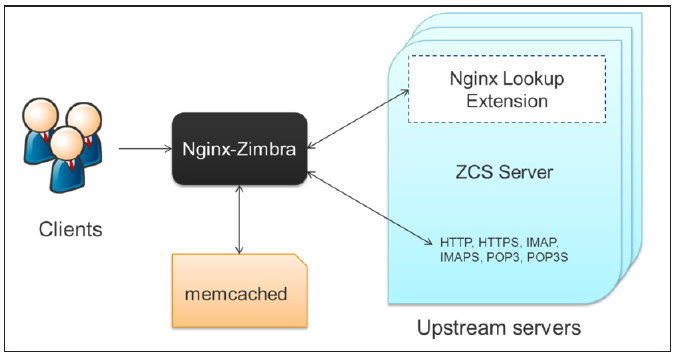

License
 Synacor, Inc., 2016-2017
Synacor, Inc., 2016-2017
© 2016-2017 by Synacor, Inc. Zimbra Collaboration マルチサーバのインストールガイド
本書はクリエイティブ・コモンズの表示+継承4.0国際ライセンスの適用対象です。 ただし、Synacor, Inc. と貴方様との間に別途ライセンス合意がある場合を除きます。 このライセンスは次のサイトから閲覧できます。 http://creativecommons.org/licenses/by-sa/4.0 あるいは、Creative Commons, PO Box 1866, Mountain View, CA 94042, USA 宛てに連絡してください。
Synacor, Inc., 2016
40 La Riviere Drive, Suite 300
Buffalo, New York 14202
概要
本ガイドは Zimbra Collaboration をインストールする管理者向けに作成されています。 このガイドの情報を活用することで、Zimbraのメッセージ技術をベースした メールシステムのインストールを適切にプランニングし、実行することが可能となります。
このガイドでは Zimbra Collaboration ネットワーク版 8.8.3 の インストール手順を説明します。
対象者
本インストールガイドの対象者は十分にシステム管理タスクを理解し、 電子メールによるコミュニケーションの基本、セキュリティの概念、 ディレクトリサービス、およびデータベース管理の経験があると想定しています。
Zimbra Collaboration のライセンス
Zimbra Collaboration ネットワーク版にアカウントを作成するため、Zimbraの ライセンスが必要です。ライセンスなしでは Zimbra Collaboration ネットワーク版を インストールできません。ライセンスに関する詳細情報については、 Zimbra License Requirements をご参照ください。
まだライセンスをお持ちでない場合、Zimbraのウェブサイト、 https://www.zimbra.com へアクセスし、ネットワーク版のダウンロードページからライセンスを入手してください。
その他の参考情報
インストール時にreadmeのテキストファイル、管理者ガイド、およびその他の Zimbraガイドを含むZimbraドキュメントがサーバーへコピーされます。 重要なドキュメントは以下となります。Zimbraのウェブサイト www.zimbra.com または管理コンソールのヘルプデスクのページからも、 すべてのドキュメンテーションへアクセスできます。
-
管理者ガイド. このガイドには製品のインフラ、サーバー機能、管理タスク、 設定オプション、およびバックアップと復元手順が含まれております。
-
管理ヘルプ. 管理ヘルプではサーバー、ドメイン、およびユーザー アカウントを管理コンソール上で追加、管理する手順が含まれております。
-
ウェブクライアントヘルプ. Zimbraウェブクライアントの機能を 使用する手順が含まれております。
-
移管ウィザードのガイド. これらのガイドにはMicrosoft Exchangeや Lotus DominoのシステムにあるユーザーをZimbra Collaborationへ 移管する方法が含まれています。
サポートと連絡先情報
Zimbraのウェブサイト、 https://www.zimbra.com ではコミュニティへ参加し、 最高なオープンソースメッセージングソリューションの開発へ力を 貸すことができます。我々は皆様からフィードバックと提案を歓迎いたします。
-
Zimbra Collaboration を購入する際は、Zimbra Sales までご連絡ください。
-
ネットワーク版のお客様はsupport@zimbra.comからカスタマーサポートへ ご連絡いただけます。
-
Zimbraフォーラム Zimbra Forumsで、 インストールや設定に関する質問への回答を確認できます。
-
Zimbraのコミュニティフォーラムへ参加し、Zimbra Collaboration の一員になり、 更なる製品知識を習得いただけます。
-
製品に対するご意見、ご要望をfeedback@zimbra.comまでお送りください。 また、Zimbraフォーラムからも要望を投稿してください。
ソフトウェアに問題がありましたら、 https://bugzilla.zimbra.com へアクセスし、 バグ報告してください。バグが再現できるよう、詳細な情報を提供してください。
インストールをプランニングする
Zimbra Collaboration (ZCS)をインストールする際に、インストールされる コンポーネントの詳細と設定できるオプションを説明します。
Zimbra アプリケーションのパッケージ
Zimbra のアーキテクチャには、企業向けの標準プロトコルを用いたオープン ソースが含まれています。サードパーティ製のソフトウェアをZimbra ソフトウェア上でテストを行い、正常に稼働するように設定しております。
インストールされるZimbra Collaborationパッケージは以下となります。
-
Zimbra Core. このパッケージには標準のライブラリ、ユティリティ、 監視ツール、および設定ファイルが含まれています。Zimbra Coreは 自動的にすべてのサーバーにインストールされます。
-
Zimbra LDAP. ユーザー認証は
OpenLDAP®ソフトウェアで提供しています。 Zimbraサーバーの各アカウントを特定できるmailbox IDが存在しています。 OpenLDAPのスキーマはZimbra Collaboration用にカスタマイズしています。Zimbra LDAPのサーバーは他のサーバーを設定する前に設定する必要があります。 LDAPマスターとLDAPレプリカのサーバーを設定し、LDAPのレプリケーションご利用できます。
-
Zimbra Store. ZimbraストアにZimbraソフトウェアが 稼働するサーブレットコンテナの Jetty を含む、 メールボックスサーバー の コンポーネントをインストールします。Zimbra メールボックスサーバー に以下のコンポーネントが含まれます。
-
データストア: データストアは
MariaDB©のデータベースです。 -
メッセージストア: メッセージストアとは、すべてのメールメッセージと 添付ファイルが保存されている場所です。
-
インデックスストア: インデックスと検索技術は
Luceneで提供しています。 インデックスファイルは各メールボックスで管理しています。 -
ウェブアプリケーションサービス:
Jettyウェブアプリケーションサーバーは ウェブアプリケーション（webapps）をストアサーバーで稼働します。 1つかそれ以上のウェブアプリケーションサーバーを提供します。
-
-
Zimbra MTA:
Postfixはオープンソースのメール通信エージェント （MTA）です。PostfixではSMTPよりメールを受信し、ローカルメール通信 プロトコル（LMTP）でメッセージを適切なZimbra メールボックスの サーバーへ送信します。また、Zimbra のMTAでは アンチウイルス と アンチスパム のコンポーネントが含まれています。 -
Zimbra Proxy: Zimbra プロキシは内部ZCSサービスへ IMAP[S]/POP[S]/HTTP[S]のクライアントリクエストを配信する高パフォーマンス プロキシサービスです。このパッケージは通常はMTAサーバー、または独自サーバーに インストールします。Zimbra-proxy パッケージをインストールした場合、プロキシの 機能がデファルトで有効化されます。
ZCS 8.7 とそれ以降のバージョンでは Zimbra Proxy の インストールは必須となっております。 -
Zimbra Memcached: Zimbra プロキシをインストールする場合に Memcachedが自動的にインストールされます。
プロキシを使用する場合、最低でも1つのサーバーに zimbra-memcached を実行する必要があります。 複数のZimbra プロキシに1つのMemcachedサーバーのみを使用することができます。
-
Zimbra SNMP: Zimbra SNMPは任意でインストールするパッケージです。
サーバーを監視するために Zimbra SNMP をインストールする場合、 各Zimbra サーバーにこのパッケージをインストールする必要があります。 -
Zimbra Logger: Zimbra のLoggerパッケージのインストールは任意です。 1つのメールボックスサーバーのみにインストールします。Zimbra LoggerがSyslogの 記録と取得するためのツールをインストールします。
-
Zimbra Logger をインストールしない場合、管理コンソールの サーバー統計が表示されません。
-
Zimbra Logger パッケージはZimbraメールボックスサーバーの インストール時にインストールする必要があります。
-
-
Zimbra Spell: Zimbra Spellパッケージのインストールは任意です。 Zimbra ウェブクライアントに
Aspellのオープンソーススペルチェックを使用しています。 -
Zimbra Apache: Zimbra Spell または Zimbra Convertd をインストールする場合、Zimbra Apacheのパッケージがインストールされます。
-
Zimbra Convertd: Zimbra-convertdパッケージはZimbra ストアの サーバーにインストールします。Zimbra Collaboration のシステムに1つの Zimbra-convertd パッケージのみが必要です。デファルトでは各Zimbraストアサーバーに1つの Zimbra-convertd がインストールされます。
-
Zimbra Archiving: Zimbra アーカイブのパッケージはZimbra Collaboration Network Edition のオプション機能です。
アーカイブ機能ではZimbra が送受信したメッセージをすべて保護 と検索することができます。
このパッケージにはメールボックスの クロス検索機能 が含まれています。クロス検索では 使用中のメールボックス、およびアーカイブされたメールボックスでメッセージを検索できます。アーカイブ機能を使用するとライセンスに使用可能なメールボックス数に 影響する場合があります。Zimbra のArchiving and Discoveryに関する詳細は Zimbra の営業部門までご連絡ください。 -
Zimbra Chat: このパッケージのインストールは任意です。インストールする場合、 Zimbra-Store のサーバにインストールします。Zimbra Chat では、 エンドユーザー向けのZimletがサーバの拡張である内蔵のXMPPサーバへ接続し、ユーザーへ ポイント・トゥ・ポイントのテキストチャットを提供できるサービスです。 なお、Zimbra Chat は Zimbra Collaboration 8.8 により、GA 機能としてサポートしています。
Zimbra Chat のパッケージはすべての Zimbra-Store にインストールする必要があります。 -
Zimbra Drive: このパッケージのインストールは任意です。インストールする場合、 Zimbra-Store のサーバにインストールします。Zimbra Drive では、 Zimbra ユーザーを ownCloud、または NextCloud サーバへ認証でき、エンドユーザー向けの ZimletでownCloudやNextCloudへ保存したドキュメントの管理が可能です。 Zimbra Drive は Zimbra Collaboration 8.8 により、GA 機能としてサポートしています。
Zimbra Drive のパッケージはすべての Zimbra-Store にインストールする必要があります。 Zimbra Drive は ownCloud または NextCloud の外部サーバへ接続する機能のみ提供しています。 そのため、ownCloudやNextCloudサーバの管理、バックアップ、およびデータ保管は御社の責任となります。
Zimbra サーバー設定はメニューで行います。インストールメニューは デフォルト値を表示します。コンピューターで設定している情報からメニューが ロジカルなホスト名とメールのドメイン名[mailhost.example.com]を表示します。 表示している値を変更できます。シングルサーバーのインストールでは 管理コンソールへログインするための管理者のパスワードの設定、および ZimbraライセンスのXMLファイルを指定する必要があります。
設定例
Zimbra Collaborationは25アカウント以下の小規模な企業から、1000アカウントを超える 大規模な企業まで、簡単にメール環境を構築できます。 ご利用環境の 設定詳細に関しましては、Zimbra Collaboration の営業部門までご連絡ください。
Zimbra Collaboration ソフトウェアのダウンロードについて
最新版のZimbra Collaboration ソフトウェアをダウンロードするため、 https://www.zimbra.com/downloads/ へアクセスしてください。 ソフトウェアをインストールするコンピュータにZimbra Collaborationの ダウンロードファイルを保存してください。
Zimbra Collaborationをインストールすると、以下のZimbraアプリケーションが Zimbra サーバーへ保存されます。
ダウンロードするファイルには、管理コンソールの
ツール→ダウンロード ページよりアクセス可能です。
また、ヘルプセンターのページや https://www.zimbra.com/support/ から 利用ガイドを入手できます。
Zimbra のライセンス条件 (Network Edition のみ)
Zimbra Collaborationのライセンスにより、管理者は展開を考えるライセンス機能を 可視化し、管理が行えるようになります。Zimbra CollaborationのNetwork Edition ライセンスに含まれている機能は以下となります。
-
アカウント上限 作成可能な最大アカウント数と作成済みアカウント数が 表示されます。
-
モバイルのアカウント上限 ネイティブメールのモバイル機能を有効に できる最大のアカウント数が表示されます。
-
タッチクライアントのアカウント上限 タッチクライアントのモバイル機能を 有効にできる最大のアカウント数が表示されます。
-
MAPIのアカウント上限 Microsoft Outlook のZimbraコネクタ（ZCO）を 使用できる最大のアカウント数が表示されます。
-
Exchange Web Services (EWS)のアカウント上限 EWSでExchangeサーバーへ 接続できる最大のアカウント数が表示されます。 なお、EWS は別売りの追加機能です。
-
高品質なドキュメントプレビュー 高品質なドキュメントプレビューを 使用できる最大のアカウント数が表示されます。LibreOfficeをインストールする必要があります。
-
アーカイブのアカウント上限 作成可能な最大のアーカイブアカウント数が表示されます。 アーカイブ機能をインストールする必要があります。
Zimbraのライセンス条件
Zimbra CollaborationのNetwork Editionにアカウントを作成するため、 Zimbraのライセンスが必要となります。
提供しているライセンスの種類を以下に紹介します。
-
トライアル版 無料トライアル版ライセンスをZimbraのウェブサイト https://www.zimbra.com から入手できます。なお、トライアル版のライセンスで 最大50ユーザーを作成することが可能であり、最大60日間までZimbraを試用できます。
-
トライアル延長版 Zimbraの営業部 sales@zimbra.com、 または1-972-407-0688で連絡し、トライアル版の延長ライセンスを購入できます。 このライセンスでは最大50アカウントを作成することが可能であり、トライアル版の ライセンスよりZimbraの試用期間を延長できます。
-
サブスクリプション版 Zimbraのサブスクリプション版ライセンスを 購入する必要があります。このライセンスは特定のZimbra Collaborationシステムのみに 有効であり、ライセンスファイル内に購入したZimbraアカウント数、 使用開始日、および有効期限が暗号化されています。
-
永久ライセンス Zimbraの永久ライセンスを購入する必要があります。 このライセンスはサブスクリプション版のライセンスと同様に、特定のZimbra Collaboration システムのみに有効となります。ライセンスファイル内に購入したZimbra アカウント数、使用開始日、および2099年12月31日の有効期限が暗号化されています。 サポートの契約を更新する場合、新しい永久ライセンスは発行されませんが、 システム側のアカウントのレコードが新たなサポート終了日に更新されます。
Zimbra Collaborationアカウントの種類によるライセンスの消費について
メールボックスのライセンスは、アーカイブ用のアカウントを含め、利用者へ割り振る アカウントに必要となります。配布リスト、エイリアス、場所やリソースについては、 ライセンスのアカウント数として計上されません。
以下にZimbra Collaborationのアカウント種類とライセンスへの影響を説明します。
-
システムアカウント システムアカウントはZimbra Collaborationで使用する固有の アカウントです。システムアカウントの例としては迷惑メールのフィルターアカウント （スパムとハム用）やウイルス隔離用のアカウント、およびドメインにGALを設定した場合の GALsync用のアカウントなどがあります。システムアカウントを誤って削除すると、 システムが正常に機能しないため、削除しないようご注意ください。 なお、システム アカウントはライセンスのアカウント数として計上されません。
-
管理者アカウント 管理者や管理者権限を与えられたアカウントはライセンスの アカウント数として計上されます。
-
ユーザーアカウント ユーザーアカウントはライセンスのアカウント数として 計上されます。
なお、ユーザーアカウントを削除するとライセンスで作成可能なアカウント数が 更新されます。 -
エイリアスアカウント エイリアスはライセンスのアカウント数として計上されません。
-
配布リスト 配布リストはライセンスのアカウント数として計上されません。
-
リソースアカウント リソースアカウント（場所、デバイス、などのリソース)は ライセンスのアカウント数として計上されません。
ライセンスのアクティベーション
すべてのNetwork Editionインストールにおいて、
ライセンスのアクティベーションを実行する必要があります。また、新規に
インストールした環境はライセンスの発行日より10日以内に
アクティベーションを実行しなければなりません。Zimbraの
管理コンソールにて、 +
設定→グローバル設定→ライセンス
をアクセスし、画面の右上にあるギアアイコンから 「ライセンスの
アクティベーション」 よりライセンスのアクティベーションを実行できます。
また、コマンドラインでもライセンスのアクティベーションを実行できます。
| Zimbra Collaborationをアップグレードする場合、ネットワーク版の機能を 正常に使用するために、直ちにアクティベーションを実施する必要があります。 |
ライセンスの自動アクティベーション
Zimbraサーバーは外部のインターネットへ接続し、Zimbraの ライセンスサーバーへ接続可能な場合、ライセンスのアクティベーションが 自動的に完了します。ただし、ライセンスのアクティベーションが正常に 完了できない場合、以下の手動でライセンスのアクティベーションを実行する 必要があります。 Manual License Activation
ライセンスの手動アクティベーション
使用しているシステムがZimbraライセンスサーバーへ正常に接続できない場合、 Zimbraのサポートポータルを使用し、手動でライセンスのアクティベーションを 実行できます。 手動のアクティベーションを実行する場合、Zimbraのホームページ (https://www.zimbra.com) へアクセスし、Support のページをクリックすると、 Zimbraのテクニカルサポートページを表示されす。 Support Portal Login を クリックし、サポートポータルへアクセスするメールアドレスとパスワードを 入力してログインします。
サポートポータルへのアクセスに問題がある場合、Zimbra営業部門、 sales@zimbra.com または1-972-407-0688までご連絡ください。
ライセンスがインストール、またはアクティベートされていない場合
Zimbra Collaborationのサーバーライセンスのインストール、またはアクティベートに 失敗した場合、ご利用のZimbra Collaborationサーバーに以下の影響が生じます。
-
ライセンスがインストールされていない場合 ライセンスがインストールされていない場合、 Zimbra Collaborationはシングルユーザーモードに切り替わり、すべての機能が一人の ユーザーでしか利用できなくなります。
-
ライセンスが無効 ライセンスファイルが破損しているか、なんらかの理由で 正しく認証できなかった場合、Zimbra Collaborationはシングルユーザーモードに 切り替わります。
-
ライセンスがアクティベートされていない場合 ライセンスのアクティベーション 猶予期間は10日です。猶予期間内にライセンスのアクティベーションが 完了していない場合、Zimbra Collaborationはシングルユーザーモードに切り替わります。
-
ライセンスの使用開始日が未来の日付 ライセンス使用開始日が未来の日付の場合、 開始日まで、Zimbra Collaborationはシングルユーザーモードでのみ使用できます。
-
ライセンスの猶予期間中 ライセンス期間を満了すると、ライセンス更新までの 猶予期間は30日です。猶予期間中は満了したライセンスに付随した機能は すべて有効ですが、管理者やユーザーなどにライセンス更新について警告が表示される 場合があります。
-
ライセンスが満了している場合 ライセンスが満了し、ライセンス満了後の猶予期間も 経過している場合、Zimbra Collaborationサーバーはオープンソース版の機能へ切り替わります。
ライセンスの入手
Zimbraのホームページ (https://www.zimbra.com) へアクセスし、 Network Downloads Areaから無料トライアル版のライセンスを入手できます。 トライアル延長版ライセンス、サブスクリプション版のライセンス、 および永久ライセンスの入手に関しては、Zimbraの営業部門、 sales@zimbra.com、または1-972-407-0688 までお問い合わせください。
購入したシステムにのみにサブスクリプション版のライセンス、および永久ライセンスを インストール可能です。一つのZCS環境には一つのZimbraライセンスが必要です。 インストールするライセンスによって作成可能なアカウント数の上限を設定されます。
なお、購入済みアカウント数、使用中のアカウント数、満了日などの現在の ライセンス情報は管理コンソールの 設定>グローバル設定>ライセンス で確認できます。
メニューを利用した設定について
デフォルトの設定では、一つのサーバーにZimbra-LDAP、 ウイルス対策と 迷惑メールチェックの機能が含まれているZimbra-MTA、 Zimbra メールボックス サーバー、SNMP 監視ツール (任意)、 Zimbra-spell (任意)、 logger ツール (任意)、 および Zimbra proxy がインストールされます。
メニューを利用した設定では、コンポーネントと既存のデフォルト属性値を表示します。 インストール時にはデフォルト属性値を変更できます。 以下のテーブルではメニューのオプション詳細を紹介します。
メインメニューのオプション
| 設定するサーバー | メニュー項目 | 詳細 |
|---|---|---|
Main Menu |
||
すべて |
Common Configuration |
サブメニュー Common Configuration Options |
zimbra-ldap |
サブメニュー Ldap configuration |
|
zimbra-logger |
zimbra-logger が有効であるか選択します。 |
|
zimbra-mta |
サブメニュー Mta configuration Postfixはオープンソースのメール通信エージェント（MTA）です。Postfixでは SMTPよりメールを受信し、ローカルメール通信プロトコル（LMTP）でメッセージを 適切のZimbraメールボックスのサーバーへ送信します。また、ZimbraのMTAでは ウイルス対策と迷惑メール対策のコンポーネントが含まれています。 |
|
zimbra-dnscache |
サブメニュー DNS Cache 基本的にMTAのみでDNSとRBL検索を最適化します。メールストアとプロキシ サーバーにもインストールできます。 |
|
zimbra-snmp |
サブメニュー Snmp configuration ZimbraのSNMPパッケージのインストールは任意です。 サーバーを監視するためにZimbra SNMPをインストールする場合、各Zimbraサーバー (Zimbra server, Zimbra LDAP, Zimbra MTA)にこのパッケージをインストールする 必要があります。 Zimbraは swatch を使用し、syslogのアウトプットでSNMP トラップを作成します。 |
|
zimbra-store |
サブメニュー Store configuration |
|
zimbra-spell |
zimbra-spellが有効であるか選択します。 |
|
zimbra-convertd |
zimbra-convertdが有効であるか選択します - デフォルトは yes |
|
zimbra-proxy |
サブメニュー Proxy configuration |
|
zimbra-imapd |
サブメニュー IMAPD configuration |
|
zimbra-chat |
Zimbra-Chatパッケージのインストールは任意です。 Zimbra-Chatのポイント・トゥ・ポイント用テキストチャット機能をインストールする場合、 ご利用のZimbra環境にすべてのZimbra Storeサーバーにインストールする必要があります。 |
|
zimbra-drive |
Zimbra-Driveパッケージのインストールは任意です。 Zimbra-Driveのファイル同期と共有機能をインストールする場合、ご利用のZimbra環境すべての Zimbra Storeサーバーにインストールする必要があります。なお、この機能を利用するため、 ownCloudまたはNextCloudを運用しているサードパーティ製のサーバーが必要となります。 |
|
Enable VMware HA |
VMware HAが有効であるか選択します - デフォルトは no |
|
Default Class of Service Configuration |
このメニューで Zimbra Collaborationの新しい機能を一覧表示し、その機能が有効であるか 確認します。 Zimbra Collaboration のインストール時に機能の設定を変更するとデフォルトの 提供サービス（COS）設定が変更されます。この設定で新しい機能をユーザーへ提供する タイミングを決めることができます。 |
|
Enable default backup schedule |
デフォルトのバックアップスケジュールが有効であるか選択します - デフォルトは yes |
|
s) Save config to file |
設定をファイルに保存します。 |
c) Collapse menu |
メニューのオプションを展開します。 |
x) Expand menu |
オプションを表示するようにメニューを展開します。 |
一般的な設定オプション
一般的な設定でインストールするパッケージではライブラリ、ユーティリティ、 監視ツール、およびZimbra Coreの標準設定ファイルが含まれています。 これらのオプションはすべてのサーバーに設定されます。
| 設定するサーバー | メインメニュー | 詳細 |
|---|---|---|
一般的な設定：これらはすべてのサーバーにおける一般的な設定です。 |
||
すべて |
Hostname |
OSインストールで設定しているホスト名 |
LDAP master host |
LDAPのホスト名です。シングルサーバー構成の場合、この名前がホスト名と一致します。 マルチサーバー環境では、LDAPホスト名はすべてのサーバーと一致する必要があります。 |
|
LDAP port |
デフォルトのポートは 389 |
|
LDAP Admin password |
マスターLDAPのパスワードです。このパスワードはZimbraの管理者アカウントに 使用され、自動的に全サーバーへ適用されます。 |
|
Zimbra LDAPサーバーを除くすべて |
LDAP Base DN |
ベースDNではユーザーとグループを読み込む場所を設定します。LDAP形式は cn=Users。 デフォルトの設定は cn=zimbra。 |
すべて |
Secure interprocess communications |
デフォルトはYESです。セキュアインタープロセスのコミュニケーションでは メールストアとJavaを使用する他のプロセスがセキュアな接続で行うことを 必要とします。また、マスターLDAPとレプリカLDAPもセキュアな接続を使用します。 |
Time Zone |
デフォルトのCOSで適用するタイムゾーンを選択します。COSでほとんどの ユーザーに適用するタイムゾーンを設定すべきです。デフォルトの タイムゾーンはPST（太平洋標準時）です。 |
|
IP Mode |
IPv4 または IPv6. |
|
Default SSL digest |
証明書を発行する際に使用するデフォルトメッセージダイジェストです。デフォルトは sha256。 |
|
Ldap 設定
| 設定するサーバー | メインメニュー | 詳細 | |
|---|---|---|---|
zimbra-ldap - 以下のオプションはZimbra LDAPのサーバーに設定します。 |
|||
Zimbra LDAPサーバー |
Status |
デフォルトは Enabled です。レプリカLDAPサーバーの場合、インストール後に データベースを手動で追加する場合、ステータスをDisabledに変更できます。 |
|
Create Domain |
デフォルトは yes。 インストール時に1つのドメインを作成できます。 追加のドメインは管理コンソールで作成できます。 |
||
Domain to create |
デフォルトのドメインはサーバーのFQDNです。DNSサーバーに有効なメール ドメインを作成している場合、こちらに入力してください。 |
||
LDAP Root password |
デフォルトではこのパスワードは自動的に発行され、内部LDAP操作において使用されます。 |
||
LDAP Replication password |
LDAPマスターへ認証するためにLDAPレプリカがこのパスワードを使用しますので、 LDAPマスターと一致している必要があります。 |
||
LDAP Postfix password |
Postfix のユーザーがLDAPサーバーへ認証する際に使用するパスワードであり、 MTAサーバーとLDAPマスターサーバーに設定するパスワードと一致している必要があります。 |
||
LDAP Amavis password |
Amavis のユーザーがLDAPサーバーへ認証する際に使用するパスワードであり、 MTAサーバーとLDAPマスターサーバーに設定するパスワードと一致している必要があります。 |
||
LDAP Nginx password |
Nginx のユーザーがLDAPサーバーへ認証する際に使用するパスワードであり、 MTAサーバーとLDAPマスターサーバーに設定するパスワードと一致している必要があります。
|
||
LDAP Bes Searcher password |
このパスワードは自動的に発行され、ldap BES のユーザーが使用します。 |
||
Zimbra Logger
| サーバー設定 | メニュー内容 | 詳細 |
|---|---|---|
Zimbra メールボックスサーバー |
zimbra-logger |
インストールした場合、自動的に有効になっています。ホストからのログは zimbralogger のパッケージがインストールしているメールボックスサーバーへ 送信し、収集している情報が統計のグラフやメッセージのトレースに使用されます。 |
MTA サーバーの設定オプション
Zimbra MTA サーバーの設定は zimbra-MTA パッケージが インストールしている場合に実行します。anti-virus と anti-spam のコンポーネントも含まれています。
| サーバー設定 | メニュー内容 | 詳細 | |
|---|---|---|---|
zimbra-mta |
|||
Zimbra MTA サーバー |
MTA Auth host |
MTAに認証サーバーが同じサーバーにある場合、自動的に設定されますが、 MTAに認証サーバーがない場合には手動で設定する必要があります。 MTA Auth Host は既存のメールボックスサーバーを指定する必要があります。 |
|
Enable Spamassassin |
デフォルトは有効です。 |
||
Enable ClamAV |
デフォルトは有効です。 添付ファイルのスキャンを有効にする場合、以下に詳細をご確認ください。 Scanning Attachments in Outgoing Mail |
||
Notification address for AV alerts |
ウイルス警告通知を受信するアドレスを設定します。 デフォルトアドレスを承諾するか、新しいアドレスを指定できます。 新しいアドレスを指定する場合、そのアドレスを管理コンソールで 作成する必要があります。
|
||
Bind password for Postfix LDAP user |
自動的に設定されます。Postfix のユーザーがLDAPサーバーへ認証する際に 使用するパスワードであり、MTAサーバーとLDAPマスターサーバーに設定する postfix パスワードと一致している必要があります。 |
||
Bind password for Amavis LDAP user |
自動的に設定されます。Amavis のユーザーがLDAPサーバーへ認証する際 に使用するパスワードであり、MTAサーバーとLDAPマスターサーバーに設定する amavis パスワードと一致しているる必要があります。 |
||
新規のZCSインストールではスパム/ハムのトレーニングを最初にインストールした
MTAに限定します。最初にインストールしたMTAをアンインストールや移動した場合、
zmtrainsa -cleanup を実行するために別のMTAでスパム/ハムのトレーニングを
有効化する必要があります。有効化する場合、以下のコマンドを実行してください。
zmlocalconfig -e zmtrainsa_cleanup_host=TRUE
|
DNS Cache
| サーバー設定 | メニュー内容 | 詳細 |
|---|---|---|
zimbra-dnscache (任意) |
||
Zimbra メールボックスサーバー |
Master DNS IP address(es) |
DNSサーバーのIPアドレス |
Enable DNS lookups over TCP |
yes または no |
|
Enable DNS lookups over UDP |
yes または no |
|
Only allow TCP to communicate with Master DNS |
yes または no |
|
Snmp 設定
| サーバー設定 | メニュー内容 | 詳細 |
|---|---|---|
zimbra-snmp (任意) |
||
すべて |
Enable SNMP notifications |
デフォルトは Yes |
SNMP Trap hostname |
SNMPトラップのホスト名 |
|
Enable SMTP notification |
デフォルトは Yes |
|
SMTP Source email address |
メール通知に使用する From アドレス |
|
SMTP Destination email address |
メール通知に使用する To アドレス |
|
Store 設定
| zimbra-store | |||
|---|---|---|---|
Zimbra メールボックスサーバー |
Create Admin User |
Yes または No に設定します。管理者アカウントはインストール時に作成されます。 このアカウントは Zimbra サーバーで最初に作成されるアカウントであり、 このアカウントで管理コンソールへログインできます。 |
|
Admin user to create |
管理者アカウントに設定するユーザー名です。自動的に発行される Zimbra Collaboration の通知を正常に受信するため、管理者アカウント作成後は リネームしないように推奨しています。 |
||
Admin Password |
管理者アカウントのパスワードを設定する必要があります。パスワードは 大文字・小文字を区別し、 最低6文字が必要です 。管理コンソールへ ログインするため、管理者名、メールアドレス、およびパスワードが必要となります。 |
||
Anti-virus quarantine user |
ウイルスの隔離アカウントがインストール時に自動的に作成されます。 Amavisdがメッセージにウイルス感染を確認した場合、そのメールは自動的に このメールボックスへ配送されます。ウイルス隔離のメールボックスへ 受信したメッセージは7日後に自動的に削除されるように設定しています。 |
||
Enable automated spam training |
Yes または No に設定します。デフォルトでは迷惑メールの
自動トレーニングが有効であり、Spam Training User 、および
Non-spam (HAM) Training User の2つのメールアカウントが自動的に
作成されます。 自動トレーニングが有効である場合、以下のメニュー
オプションが表示されます。+
これらのアドレスは自動的に迷惑メールのトレーニングフィルター
として起動するように設定されます。アカウントはランダムの名前で作成されます。
アカウントの目的を簡単に確認するため、この名前を変更することも可能です。 |
||
Spam Training User |
迷惑メールであるが、迷惑メールとしてマークされなかったメッセージのコピーを 受信するアカウント。 |
||
Non-spam (HAM) Training User |
迷惑メールとしてマークされたが、実際は迷惑メールではなかった メッセージのコピーを受信するアカウント。 |
||
デフォルトのポート設定を表示します |
|||
Zimbra メールボックスサーバー |
SMTP host |
デフォルトはサーバー名 |
|
Web server HTTP port: |
デフォルトは 80 |
||
Web server HTTPS port: |
デフォルトは 443 |
||
Web server mode |
HTTP, HTTPS, Mixed, Both または Redirect を使います。
|
||
IMAP server port |
デフォルトは 143 |
||
IMAP server SSL port |
デフォルトは 993 |
||
POP server port |
デフォルトは 110 |
||
POP server SSL port |
デフォルトは 995 |
||
Use spell checker server |
デフォルトは Yes (インストールしている場合) |
||
Spell server URL |
|||
下記の各設定、または両方は TRUE へ変更した場合、 |
|||
Zimbra メールボックスサーバー |
Configure for use with mail proxy. |
デフォルトは FALSE |
|
Configure for use with web prox. |
デフォルトは FALSE |
||
Enable version update checks. |
Zimbra Collaboration は自動的に 新しい Zimbra Collaboration の更新があるか確認します。デフォルトは TRUE です。 |
||
Enable version update notifications. |
これはTRUEの場合、更新がある場合に自動的に通知します。
|
||
Version update notification email. |
更新がある場合に通知するメールアドレスです。デフォルトでは 管理者アカウントへ通知を送信します。 |
||
Version update source email. |
メール通知を送信する（差出人）メールアドレスです。 デフォルトは管理者アカウントです。 |
||
Proxy 設定
Zimbra Proxy (Nginx-Zimbra) は内部ZCSサービスへIMAP[S]/POP[S]/HTTP[S]の クライアントリクエストを配信する高パフォーマンスプロキシサービスです。
この機能には別のパッケージ Zimbra Memcached もインストールする必要が
あり、zimbra-proxy パッケージをインストールする場合、自動的に
インストールするように選択されます。Proxy を利用する場合、zimbramemcached
を実行しているサーバーが必要です。複数の Zimbra Proxy を利用の場合、
1つのmemcachedサーバーを共有します。
| サーバー設定 | メニュー内容 | 詳細 |
|---|---|---|
zimbra-proxy |
||
メールボックスサーバー、 |
Enable POP/IMAP Proxy |
デフォルトは TRUE |
IMAP proxy port |
デフォルトは 143 |
|
IMAP SSL proxy port |
デフォルトは 993 |
|
POP proxy port |
デフォルトは 110 |
|
POP SSL proxy port |
デフォルトは 995 |
|
Bind password for nginx ldap user |
デフォルトは set |
|
Enable HTTP[S] Proxy |
デフォルトは TRUE |
|
HTTP proxy port |
デフォルトは 80 |
|
HTTPS proxy port |
デフォルトは 443 |
|
Proxy server mode |
デフォルトは https |
|
IMAPD 設定
IMAPD は mailboxd の内部 IMAP[S] サービスの代わりに運用できる外部の
IMAP[S] サービスです。通常の運用では、シングルサーバー環境には利用しません。
| サーバー設定 | メニュー内容 | 詳細 |
|---|---|---|
zimbra-imapd |
||
メールボックスサーバー、または |
Add to upstream IMAP Servers?: |
デフォルトは
|
送信メールの添付ファイルスキャン
Zimbra ウェブクライアントで送信するメールに添付したファイルを リアルタイムでスキャンすることが可能です。このオプションが有効の場合、 メールに添付ファイルを追加すると、メッセージを送信する前にClamAVが スキャンします。ClamAVがウイルスを検知した場合、メッセージにファイルの 添付を拒否します。デフォルトの設定ではスキャンがシングルサーバー環境の インストールで設定しています。
マルチサーバー環境で有効にするため、1つのMTAサーバーをClamAVスキャン用に 選択する必要があります。選択しましたら、以下のコマンドで有効化します。
zmprov ms <mta server> zimbraClamAVBindAddress <mta server>
zmprov mcf zimbraAttachmentsScanURL clam://<mta server>:3310/
zmprov mcf zimbraAttachmentsScanEnabled TRUEZimbra Proxyサーバーの概要
Zimbra Proxy (Nginx-Zimbra)は高パフォーマンスのリバースプロキシであり、 IMAP[S]/POP[S]/HTTP[S]のクライアントリクエストを他の内部 ZCSサービスへ通信します。リバースプロキシサーバーは、インターネットに 接続しているサーバーでクライアントから内部サービスへの接続の保護と管理を行います。 また、他に提供できる機能として、GSSAPI認証、スロットルコントロール、 異なる仮想ホスト名に異なるSSL証明書での接続などの機能があります。
一般的なご利用ケースとして、Zimbra Proxyはユーザーのログイン情報 （アカウントIDやユーザー名）を取得し、Nginx拡張検索 でアップストリーム メールサーバーのルート、またはウェブサーバーのアドレスを取得し、 最終的にクライアントとアップストリームZimbra Collaborationサーバーへの 接続をプロキシします。 ルート検索の速度を向上するため、memcachedを使用し、検索結果を キャッシュします。同じユーザー名でのログインが発生した場合、 Nginx検索拡張での検索を実施せず、キャッシュした情報を直接使用します。
Zimbra Proxyのパッケージをメールボックスサーバー、MTAサーバー、 または独立したサーバーにインストールできます。Zimbra Proxyの パッケージをインストールした場合、プロキシ機能が有効化されます。 ほとんどの場合、変更が必要な個所はありません。
Zimbra Proxyを使用するメリット：
-
メールボックスサーバーへのアクセスの一元化
-
ロードバランス
-
セキュリティ
-
認証
-
SSL終結
-
キャッシュ
-
ログと監査の情報収集の一元化
-
URLの再発行
詳細についてはZimbra Proxy ガイドを参照ください： https://wiki.zimbra.com/wiki/Zimbra_Proxy_Guide
Zimbra Proxy コンポーネントとMemcached
Zimbra Proxyは高速かつ、安定性、拡張性のあるHTTP/POP/IMAPの プロキシを提供できるようにデザインされています。 Zimbra Proxyには以下の機能が含まれています。
-
Nginx すべてのHTTP/POP/IMAPリクエストを処理する HTTP/IMAP/POP3の高パフォーマンスなプロキシサーバーです。
-
Zimbra プロキシルート検索ハンドラ これはZimbra Collaborationメールボックスサーバーに含まれているサーブレットです。 このサーブレットはユーザーアカウントの ルート情報（ユーザーアカウントが依存しているサーバーと ポート番号）のクエリを処理します。
Memcached 高パフォーマンスの分散したメモリオブジェクトのキャッシュ システムです。パフォーマンスを拡大するため、ルート情報は 繰り返し使用できるようにキャッシュされます。 zimbra-memcached は別のパッケージですが、zimbra-proxyと共に インストールすることを推奨しています。
Zimbra Proxy の構成と流れ
以下にエンドクライアントがZimbra Proxyへ接続した際の構成とログインの流れを説明します。
-
エンドクライアントがHTTP[S]/POP[S]/IMAP[S]のポートでZimbra Proxyへ接続する。
-
Memcachedのサーバーが起動しており、キャッシュが有効である場合、 クライアントのアップストリームルート情報をクエリするため、Proxyが memcachedサーバーへ接続を試みます（ラウンドロビン方式で有効な memcachedサーバーを選択します）。
-
Memcachedにルート情報がある場合、それがcachehitのケースとなり、 Proxyが関連付いているZimbraメールボックスサーバーへ直接接続し、 クライアントへウェブ/メールのプロキシセッションを開始します。 Memcachedのコンポーネントは指定した期間（デフォルトで1時間、変更可能）、 ルート情報を保存します。デフォルトの保存期間が過ぎるまで、Zimbra Proxyは Zimbra Proxyルート検索ハンドラ/NLEへクエリせず、キャッシュしたルート 情報を使用します。
-
Memcachedにルート情報が存在しない場合、cache-missのケースとなりますので、 Zimbra proxyはユーザーアカウントが存在するアップストリームのメールボックス サーバーを検索するため、有効なZimbra Proxyルート検索ハンドラ/NLE（ラウンド ロビン方式で有効のサーバーを選択します）へHTTPリクエストを送信します。
-
Zimbra Proxyルート検索ハンドラ/NLEがアクセスするアカウントのルート情報を LDAPから検索し、Zimbra Proxyへ返答します。
-
Zimbra Proxyは返答されたルート情報を使用して関連しているZimbraメールボックス サーバーへ接続し、ウェブ/メールのプロキシセッションを開始します。また、 ルート情報をmemcachedサーバーへキャッシュしますので、ユーザーが再び ログインした際にmemcachedサーバーがキャッシュしたアップストリーム情報を使用し、 Zimbra ProxyがNLEへ接続する必要はなくなります。なお、この動作は エンドクライアントの目には見えず、あくまでZimbraメールボックスサーバーへ直接 接続しているように動作します。
Zimbra Collaboration 全体におけるZimbra Proxy の位置付け
以下の画像でZimbra Proxyと他の Zimbra Collaborationコンポーネントの 位置付けを表しています。

提供するストラテジー
提供するストラテジーと非Proxyホストに対する関連状況により、Zimbra は Proxyサーバーをエッジ（独立したサーバー、またはLDAP/MTAを稼働している サーバーと共に）に使用し、メールボックスサーバーをその後ろで 稼働するように推奨しています。複数Proxyをご利用の場合、外部のロード バランサーを前段に立て、Proxyサーバーへの負荷を平均的に割り振ることができます。
| Zimbra Proxyのパッケージはファイアウォールとしては機能しませんので、 お客様の環境でファイアウォールの後方に設置する必要があります。 |
インストール時の設定について
zimbra-proxyのパッケージをインストール時に選択する必要があります （デフォルトでインストールされます）。パフォーマンス向上のため、Proxyを インストールする場合はMemcachedもインストールすることを強く推奨しています。
Install zimbra-proxy [Y] Install zimbra-memcached [Y]
上記の選択肢ですべてのIMAP[S]/POP[S]/HTTP[S] Proxyコンポーネントを インストールおよび有効化し、以下のデフォルト設定を使用します。
Proxy configuration
1) Status: Enabled
2) Enable POP/IMAP Proxy: TRUE
3) IMAP proxy port: 143
4) IMAP SSL proxy port: 993
5) POP proxy port: 110
6) POP SSL proxy port: 995
7) Bind password for nginx ldap user: set
8) Enable HTTP[S] Proxy: TRUE
9) HTTP proxy port: 80
10) HTTPS proxy port: 443
11) Proxy server mode: https
Zimbra Proxy ポート
|
以下のポートはZimbra Proxyまたは（Proxyを設定していない場合）Zimbra
メールボックスで使用されます。 これらのポートで他のサービスを稼働している場合、無効化してください。 |
エンドクライアントはZimbra Proxyポートで直接Zimbra Proxyへ接続します。 Zimbra ProxyはZimbra メールボックスのポートで（メールボックスサーバーに 存在する）ルート検索ハンドラ/NLEへ接続します。
Zimbra Proxy ポートマップ
| Zimbra Proxy ポート (Zimbra Collaborationの外部) | |
|---|---|
HTTP |
80 |
HTTPS |
443 |
POP3 |
110 |
POP3S (セキュア POP3) |
995 |
IMAP |
143 |
IMAPS (セキュア IMAP) |
993 |
| Zimbra メールボックスポート (Zimbra Collaborationの内部) | |
|---|---|
ルート検索ハンドラ |
7072 |
HTTPバックエンド（Proxyが設定している場合） |
8080 |
HTTPSバックエンド（Proxyが設定している場合） |
8443 |
POP3バックエンド（Proxyが設定している場合） |
7110 |
POP3Sバックエンド（Proxyが設定している場合） |
7995 |
IMAPバックエンド（Proxyが設定している場合） |
7143 |
IMAPSバックエンド（Proxyが設定している場合） |
7993 |
仮想ホストを設定する
サーバーに複数のドメイン名をホストするため、複数の仮想ホスト名を 設定できます。仮想ホストを作成した場合、ユーザーがログインする際に ユーザー名にドメイン名の部分を指定しなくてもログインできます。
仮想ホストは管理コンソールの
設定→ドメイン→仮想ホスト
のページにて設定できます。仮想ホストにはAレコードを含む有効なDNS設定が必要となります。
ユーザーがログインする際、ブラウザに仮想ホスト名を入力します。 例えば、https://mail.example.com など。Zimbraのログイン画面が 表示されたら、ユーザーはユーザー名とパスワードのみを入力します。 認証リクエストが仮想ホスト名のドメインを検索します。仮想ホストが 確認できた後、認証がそのドメインに対して実行されます。
サーバー環境の準備
Zimbra Collaboration を正しくインストールし、稼働するため、 ご利用のシステムが必要条件を満たしていることを確認してください。 システム管理者は一般的なメールシステムのインストールと 管理についての知識が必要です。
| ZCSのインストールを実行する前に zimbra のユーザーを作成しないでください。 このユーザーはインストール時に自動的に作成され、必要な環境が設定されます。 |
システム要件
Zimbra Collaboration のシステム要件については、このガイドの最後にある System Requirements for Zimbra Collaboration をご確認ください。
オペレーティングシステム構成の編集
Zimbra Collaboration はUbuntu® LTS, Red Hat® Enterprise Linux, CentOS, および Oracle Linuxなど、さまざまなOSで稼働できます。
ご利用になるLinuxの種類において、すべてデフォルト設定でのインストールが必要です。
| Zimbra Collaboration では、Zimbra Collaboration にてテスト済みの最新パッチへ OSを更新していることを推奨しています。なお、最新のリリースノートにて、 Zimbra Collaboration でテストしたOSパッチリストを確認できます。 |
高品質なドキュメントプレビューの設定方法 (Network Edition 限定)
高品質なドキュメントプレビュー機能はご利用のOSに伴い、LibreOffice、または LibreOffice-headlessのパッケージをインストールすることが必要です。
LibreOfficeをインストールしている場合、システムが自動的に高品質なドキュメント プレビュー機能を使用するように設定します。LibreOfficeをインストールしていない場合、 以前の Zimbra Collaboration で使用したプレビューエンジンが使用されます。
パッケージのインストールはLinuxのパッケージマネジャーシステムで行います。
-
RHELの場合、libreoffice-headlessのパッケージをインストールします:
yum install libreoffice yum install libreoffice-headless
-
Ubuntuの場合、libreofficeのパッケージをインストールします:
apt-get install libreoffice
言語とフォントのパッケージインストール
LibreOfficeが正常にドキュメントと添付ファイルを表示するため、適切な言語と フォントのパッケージがインストールされいることを確認してください。例えば：
-
Ubuntu 12.04 (サポート対象終了) を使用し、東アジア言語を表示する場合、以下をインストールします。
apt-get install libreoffice-l10n-* apt-get install ttf-vlgothic
-
Ubuntu 14.04、または 16.04 を使用し、東アジア言語を表示する場合、以下をインストールします。
apt-get install libreoffice-l10n-* apt-get install fonts-vlgothic
-
RHELを使用している場合、以下をインストールします。
yum install libreoffice-langpack-xx
DNS 設定要件
インストール中にドメインを作成した場合、Zimbra Collaboration は MXレコードが正常に設定されているか確認します。 設定されていない場合、DNSにMXレコードを設定するように 推奨するエラーが表示されます。
メール送受信のため、 Zimbra MTA ではDNSにてAレコードとと MXレコードを設定する必要があります。メール送信の際、 MTAがホスト名とメールルーティング情報を解決するためにDNSを使用します。 メール受信の際、メッセージをメールサーバーへ正しく配送するため、 MXレコードが正常に設定されている必要があります。
インストール時には、MXレコードが正常に設定されしているか Zimbra Collaboration が 確認します。設定されていない場合、DNSにMXレコードを設定するように 推奨するエラーが表示されます。
DNSを有効にしない場合、リレーホストを設定する必要があります。 Zimbra Collaboration の インストール後、 管理コンソール の グローバル設定→MTA タブにて:
-
ドメイン管理者がAdministration Consoleから MXレコードを確認できるようにする の オプションのチェックを外します。
-
外部配信用のリレーMTA に外部配信に使用するMTAのアドレスを入力します。
| リレーホストを設定しても、 Zimbra Collaboration サーバーがインターネットから メールと受信する場合、MXレコードの設定が必要となります。 |
マルチサーバーのインストール
マルチサーバーのインストールは簡単に実行できます。各サーバーで同じ インストールスクリプトを実行し、インストールするコンポーネントを選択し、 メニューでシステムを設定します。
最終設定の後にサーバーのインストールが完了し、サーバー設定の手順を 実行しましたら、サーバーが起動し、ステータスが表示します。
インストールの順番
-
ZCS LDAP サーバー
-
ZCS MTA サーバー
-
ZCS Proxy サーバー
-
ZCS メールボックスサーバー オプション：
-
Zimbra メールボックスサーバー:メールストアサービスと ウェブアップサービスを提供する。 （メールストアのサービス + UIのサービス）
-
Zimbra ウェブアプリケーションサーバーのスプリットモード:
-
Zimbra メールストアのサーバー(メールストアのサービス)
-
Zimbra ウェブアップのサーバー(UIのサービス)
-
-
-
ZCS IMAPD サーバー
| Zimbra-proxyは通常MTAサーバー、または独立じたサーバーにインストールします。 |
| ZCSのインストールを実行する前に「Zimbra」のユーザーを 作成しないでください。このユーザーはインストールで自動的に作成され、 必要な環境が設定されます。 |
| 開始前、システム時間がすべてのサーバーに同期していることを確認してください。 |
インストールのプロセスを開始する
|
開始する前に以下を必ず確認してください：
|
最新のZimbraソフトウェアダウンロードについて、
https://www.zimbra.com.
へアクセスしてください。Zimbra Collaborationの Tar ファイルを
インストールするコンピュータに保存してください。
| このガイドにあるスクリーンショットはZimbra インストールのスクリプトの 例です。実際のインストールスクリプトと異なる可能性があります。 |
以下の手順１から手順4はインストールするサーバーのすべてに実行します。
Zimbra サーバへSSHセッションを開き、以下の手順を実行します。
-
Zimbra サーバーへ root ユーザーでログインし、Zimbra Collaborationの アーカイブTarファイルを保存したディレクトリへ移動します (cd /var/<tmp>)。 以下のコマンドを実行します。
-
ファイルを展開するため、
tar xzvf [zcs.tgz] -
適切なディレクトリへ移動するため、
cd [zcs filename]filenameにリリースのバージョンとビルド詳細が含まれています。 -
インストールを開始するため、
./install.sh
インストールが進み[ ]の中にある設定のデフォルト値を変更せずに承諾する場合、 Enterキー を押してください。設定を変更する場合、適切な値を入力してください。 root@mailhost:/tmp# tar xzvf zcs.tgz zcs-NETWORK-8.7.6_GA_1776.UBUNTU16_64.20170326144124/ zcs-NETWORK-8.7.6_GA_1776.UBUNTU16_64.20170326144124/packages/ . . . zcs-NETWORK-8.7.6_GA_1776.UBUNTU16_64.20170326144124/install.sh zcs-NETWORK-8.7.6_GA_1776.UBUNTU16_64.20170326144124/README.txt root@zimbraiop:/tmp/# cd zcs-NETWORK-8.7.6_GA_1776.UBUNTU16_64.20170326144124/ root@zimbraiop:/tmp/zcs-NETWORK-8.7.6_GA_1776.UBUNTU16_64.20170326144124# ./install.sh Operations logged to /tmp/install.log.y1YeCSI5 . . . -
-
install.sh のインストールスクリプトでは、適切な Zimbra パッケージが 用意されているか確認します。
インストールのプロセスにて Sendmail、Postfix、MySQL、および MariaDB のソフトウェアが 起動しているか確認します。
これらのソフトウェアが起動中である場合、無効にするよう要求されます。+ MySQL や MariaDB の無効化は 任意の動作 ですが、強く推奨しております。+ Zimbra Collaborationを正常に起動するため、Sendmail と Postfix を無効にする必要があります。root@zimbraiop:/tmp/zcs-NETWORK-8.7.6_GA_1776.UBUNTU16_64.20170326144124# ./install.sh Operations logged to /tmp/install.log.y1YeCSI5 Checking for existing installation... zimbra-chat...NOT FOUND zimbra-drive...NOT FOUND zimbra-imapd...NOT FOUND zimbra-ldap...NOT FOUND zimbra-logger...NOT FOUND zimbra-mta...NOT FOUND zimbra-dnscache...NOT FOUND zimbra-snmp...NOT FOUND zimbra-store...NOT FOUND zimbra-apache...NOT FOUND zimbra-spell...NOT FOUND zimbra-convertd...NOT FOUND zimbra-memcached...NOT FOUND zimbra-proxy...NOT FOUND zimbra-archiving...NOT FOUND zimbra-core...NOT FOUND . . . -
Zimbraのソフトウェア契約が表示されます。契約を確認し、
Do you agree with the terms of the software license agreement? [N]が
表示されたら、インストールを継続するためにYを入力してください。ライセンス契約は分割して表示され、各部分ごとに承諾する必要があります。 -
Use Zimbra’s package repository [Y]
が表示されたら、インストールを継続するためにenterキーを押下してください。 Zimbra のサードパーティ製パッケージをインストールするため、ご利用のシステムに yum または apt-get へZimbraのパッケージリポジトリが設定されます。Checking for installable packages Found zimbra-core (local) Found zimbra-ldap (local) Found zimbra-logger (local) Found zimbra-mta (local) Found zimbra-dnscache (local) Found zimbra-snmp (local) Found zimbra-store (local) Found zimbra-apache (local) Found zimbra-spell (local) Found zimbra-convertd (local) Found zimbra-memcached (repo) Found zimbra-proxy (local) Found zimbra-archiving (local) Found zimbra-imapd (local) Found zimbra-chat (repo) Found zimbra-drive (repo) Use Zimbra's package repository [Y] y Configuring package repository -
次はサーバへインストールするパッケージを選択します。
クロスメールボックスの検索機能を利用する場合、Zimbra の Archive パッケージをインストールしてください。また、Archiving and discovery 機能を 利用するため、Zimbraの営業部門までご連絡ください。 インストーラがZimbraをインストールするために必要なディスク領域を確認します。
-
インストーラがSystem Requirements for Zimbra Collaborationにある Zimbra Collaborationのシステム要件に記載されている、必要なパッケージがインストールされているか 確認します。
メインメニューが表示する前にインストーラがDNS等でホスト名を解決できるか確認し、 エラーが発生した場合にホスト名を変更するか確認します。ドメイン名はDNSに MXレコードを設定する必要があります。
Zimbra のマスターLDAPサーバをインストールする
他のZimbraサーバーをインストールする前に、Zimbra のマスターLDAP サーバーを設定する必要があります。LDAPレプリケーションを利用する場合、マスター LDAPサーバーとレプリカLDAPサーバーを他のサーバを配置する前に設定するか、他の ZCSサーバーの配置後にすべてのLDAPサーバを設定することも可能です。 詳細についてはConfiguring LDAP Replicationを参照してください。
-
Starting the Installation Processの手順1から 手順4まで実行し、SSHセッションでLDAPサーバーへアクセスし、root ユーザーでサーバーへ ログインし、Zimbraソフトウェアのインストールを開始します。
-
Zimbra-ldapのパッケージにて
Yを入力し、enterキーを押下するとインストールされます。zimbra-mta,zimbra-storeおよびzimbra-loggerのパッケージをNに指定します。 実例として、以下のオプションでLDAPのパッケージのみがインストールされます。Install zimbra-ldap [Y] Y Install zimbra-logger [Y] N Install zimbra-mta [Y] N Install zimbra-dnscache [Y] N Install zimbra-snmp [Y] N Install zimbra-store [Y] N Install zimbra-apache [Y] N Install zimbra-spell [Y] N Install zimbra-convertd [Y] N Install zimbra-memcached [Y] N Install zimbra-proxy [Y] N Install zimbra-archiving [N] N Install zimbra-chat [Y] N Install zimbra-drive [Y] N Install zimbra-imapd [Y] N Checking required space for zimbra-core Installing: zimbra-core zimbra-ldap The system will be modified. Continue? [N] -
システムを編集するため、
Yを入力し、 Enter キーを押下します。 選択したパッケージがサーバーへインストールされます。メインメニューでインストールするZimbraコンポーネントの デフォルト属性値を表示します。
Xを入力し Enter キーを押下すると、メインメニューが展開しますので、 すべての属性値を確認できます。
なお、インストールするパッケージに関する設定詳細のみが表示されます。編集する必要がある属性値にアスタリスク( *) が表示されます。メニューから編集希望の属性値の番号を入力します。すべての属性値を 変更することが可能です。メインメニューの詳細につきましては、 Main Menu optionsをご参照ください。
Main menu 1) Common Configuration: 2) zimbra-ldap: Enabled 3) Enable default backup schedule: yes s) Save config to file x) Expand menu q) Quit *** CONFIGURATION COMPLETE - press 'a' to apply Select from menu, or press 'a' to apply config (? - help) -
1を入力し、Common Configuration を表示します。Common configuration 1) Hostname: ldap-1.example.com 2) Ldap master host: ldap-1.example.com 3) Ldap port: 389 4) Ldap Admin password: set 5) Store ephemeral attributes outside Ldap: no 6) Secure interprocess communications: yes 7) TimeZone: America/Mexico_City 8) IP Mode: ipv4 9) Default SSL digest: sha256 Select, or 'r' for previous menu [r] -
4を入力し、自動的に発行されるLDAPの管理者パスワードを表示します。Select, or 'r' for previous menu [r] 4 Password for ldap admin user (min 6 characters): [bEyMZxNxq]このパスワードは変更可能です。
LDAPパスワード、LDAPホスト名、およびLDAPポートをメモに取ってください。LDAP Admin Password _______________________ LDAP Host name _______________________ LDAP Port _______________________メールボックスサーバーとMTAサーバーをインストールする際に、これらの情報を 手動で設定する必要があります。 -
7を入力し、正しいタイムゾーンを設定します。1 Africa/Algiers . . . 94 Europe/London . . . 109 Pacific/Tongatapu 110 UTC Enter the number for the local timezone: [110] 94 -
rを入力し、メインメニューへ戻ります。 -
メインメニューにて、
2を入力し、zimbra-ldap の Ldap configuration 設定を表示します。Ldap configuration 1) Status: Enabled 2) Create Domain: yes 3) Domain to create: ldap-1.example.com 4) Ldap root password: set 5) Ldap replication password: set 6) Ldap postfix password: set 7) Ldap amavis password: set 8) Ldap nginx password: set 9) Ldap Bes Searcher password: set Select, or 'r' for previous menu [r] -
3を入力し、 Domain to create にてデフォルトのドメイン名をご利用の ドメイン名に変更します（例: example.com）。 -
LDAP configuration メニューにリストするパスワードは自動的に発行されています。
LDAP root, LDAP replication, LDAP Postfix, LDAP Amavis, およびLDAP Nginxの パスワードを変更希望の場合、関連している番号4から8を入力し、パスワードを 変更してください。
Ldap replication password _____________________ Ldap postfix password _____________________ Ldap amavis password _____________________ Ldap nginx password _____________________MTAとレプリカLDAPサーバーを設定する際にこれらのパスワードが必要となりますので、 メモを取ってください。 -
LDAP設定の変更が完了したら、
*** CONFIGURATION COMPLETE - press 'a' to apply Select from menu, or press 'a' to apply config (? - help) a Save configuration data to a file? [Yes] Save config in file: [/opt/zimbra/config.8381] Saving config in /opt/zimbra/config.8381...done-
rを入力し、メインメニューへ戻ります。 -
aを入力し、設定を適用します。 -
Save configuration data to fileが表示されたら、
Yesを入力し、 Enter キーを押下します。 -
次のリクエストで設定ファイルを保存する場所が確認されます。
デフォルトを承諾する場合、 Enter キーを押下します。
別のディレクトリへ保存する場合、保存希望のディレクトリを入力し、 Enter キーを押します。
-
-
The system will be modified - continue? [No]が表示されたら、
yを入力し、 Enter キーを押します。サーバーが編集されます。コンポーネントのインストールとサーバー設定が 完了するまで、数分かかる場合があります。ここではローカル設定の適用、 SSL証明書の作成とインストール、パスワードの設定、タイムゾーンの プリファレンス適用、サーバーの再起動、などのプロセスが含まれています。
-
Configuration complete - press return to exitが表示されたら、 Enter キーを押します。*** CONFIGURATION COMPLETE - press 'a' to apply Select from menu, or press 'a' to apply config (? - help) a Save configuration data to a file? [Yes] Save config in file: [/opt/zimbra/config.8381] Saving config in /opt/zimbra/config.8381...done. The system will be modified - continue? [No] y Operations logged to /tmp/zmsetup.20170302-133132.log Setting local config values...done. . . . Starting servers...done. Skipping creation of default domain GAL sync account - not a service node. Setting up zimbra crontab...done. Moving /tmp/zmsetup.20170302-133132.log to /opt/zimbra/log Configuration complete - press return to exitLDAPサーバのインストールは完了です。
Zimbraメールボックスサーバーのインストール
zimbra-store パッケージはLDAPサーバー、MTAサーバー、または独立したサーバーに インストールすることが可能です。
また、以下の設定オプションがあります。
-
Zimbraメールボックスサーバー にメールストアとウェブアップの サービスが含まれる（メールストアサーバー+UIサーバー）
-または-
-
Zimbra ウェブアプリケーションのサーバースプリット で、 異なるサーバに以下の構成が可能：
-
メールストア専用のサーバーでバックエンドのSOAP/REST機能を提供する
-
UI提供の専用サーバーでウェブUIの機能（固定のHTML/JS/CSSコンテンツ）を提供する
-
上記の構成に利用できるサーバー台数の制限はありません。ただし、サービスを 提供するために、サーバースプリットの環境にメールストアサーバーとUIサーバーを 最低1台ずつ設置する必要があります。
| ウェブアプリケーションのサーバースプリット環境にProxyとMemcachedも インストールする必要があります。 |
Zimbraのライセンスファイルを、インストール時に1つのメールボックス サーバーにインストールできます。ライセンスファイルをお持ちでない場合、 ZCSのインストールが完了後に管理コンソールからインストールできます。 詳細については Zimbra License Requirementsを ご参照ください。
Zimbraメールボックスサービスをインストールする
-
Starting the Installation Processの 手順1から手順4を実行し、SSHセッションでLDAPサーバーにアクセスし、 root ユーザーでサーバーへログインし、Zimbraソフトウェアの インストールを開始する。
-
zimbra-store のパッケージに
Yを入力して、enterキーを押すと インストールを開始します。任意のオプションとして、 zimbra-logger を1つの メールストアのみにインストールすることも可能です。 例として、以下のオプションでLDAPのパッケージのみをインストールします。SNMPを使用する場合、すべてのZimbraサーバーにSNMPをインストールする 必要があります。利用する場合、 zimbra-snmp に yを入力してください。Install zimbra-ldap [Y] N Install zimbra-logger [Y] Y Install zimbra-mta [Y] N Install zimbra-dnscache [Y] N Install zimbra-snmp [Y] Y Install zimbra-store [Y] Y Install zimbra-apache [Y] Y Install zimbra-spell [Y] Y Install zimbra-convertd [Y] Y Install zimbra-memcached [Y] N Install zimbra-proxy [Y] N Install zimbra-archiving [N] Y Install zimbra-chat [Y] Y Install zimbra-drive [Y] Y Install zimbra-imapd [Y] N Checking required space for zimbra-core Checking space for zimbra-store Checking required packages for zimbra-store FOUND: libreoffice-1:4.2.8-0ubuntu4 zimbra-store package check complete. Installing: zimbra-core zimbra-logger zimbra-snmp zimbra-store zimbra-apache zimbra-spell zimbra-convertd zimbra-archiving zimbra-chat zimbra-drive The system will be modified. Continue? [N] -
システムを編集するため、
Yを入力し、 Enter キーを押下します。 サーバーに選択したパッケージがインストールされます。メインメニューにて、インストールするZimbra コンポーネントの デフォルト属性値を表示します。
Xを入力し Enter キーを押すと、メインメニューが展開しますので、 すべての属性値を確認できます。
なお、インストールするパッケージに関する設定詳細のみが表示されます。編集する必要がある属性値にはアスタリスク( *)が表示されます。メニューから編集希望の属性値の番号を入力します。すべての属性値を 変更することが可能です。メインメニューの詳細につきましては、 Main Menu optionsをご参照ください。
Main menu 1) Common Configuration: +Hostname: mailstore-1.example.com ******* +Ldap master host: UNSET +Ldap port: 389 ******* +Ldap Admin password: UNSET +LDAP Base DN: cn=zimbra +Store ephemeral attributes outside Ldap: no +Secure interprocess communications: yes +TimeZone: UTC +IP Mode: ipv4 +Default SSL digest: sha256 2) zimbra-logger: Enabled 3) zimbra-snmp: Enabled 4) zimbra-store: Enabled +Create Admin User: yes +Admin user to create: admin@mailstore-1.example.com ******* +Admin Password UNSET +Anti-virus quarantine user: virus-quarantine.mgpgruxx@mailstore-1.example.com +Enable automated spam training: yes +Spam training user: spam.qgku2xsq@mailstore-1.example.com +Non-spam(Ham) training user: ham.y49bbzuis@mailstore-1.example.com ******* +SMTP host: UNSET +Web server HTTP port: 8080 +Web server HTTPS port: 8443 +Web server mode: https +IMAP server port: 7143 +IMAP server SSL port: 7993 +POP server port: 7110 +POP server SSL port: 7995 +Use spell check server: yes +Spell server URL: http://mailstore-1.example.com:7780/aspell.php +Enable version update checks: TRUE +Enable version update notifications: TRUE +Version update notification email: admin@mailstore-1.example.com +Version update source email: admin@mailstore-1.example.com +Install mailstore (service webapp): yes +Install UI (zimbra,zimbraAdmin webapps): yes ******* +License filename: UNSET 5) zimbra-spell: Enabled 6) zimbra-convertd: Enabled 7) Default Class of Service Configuration: 8) Enable default backup schedule: yes s) Save config to file x) Expand menu q) Quit Address unconfigured (**) items (? - help) -
1を入力し、Common Configuration を表示します。Common configuration 1) Hostname: mailstore-1.example.com ** 2) Ldap master host: UNSET 3) Ldap port: 389 ** 4) Ldap Admin password: UNSET 5) LDAP Base DN: cn=zimbra 6) Store ephemeral attributes outside Ldap: no 7) Secure interprocess communications: yes 8) TimeZone: UTC 9) IP Mode: ipv4 10) Default SSL digest: sha256メールボックスサーバーのホスト名が表示されます。
マスターLDAPのホスト名とパスワードを、LDAPサーバーに設定した値 に変更する必要があります。 -
2を入力し、 Enter キーを押して、LDAPホスト名を入力します。 (この実行例では ldap-1.example.com となります) -
4を入力し、 Enter キーを押し、LDAPパスワードを入力します。
LDAPパスワードを確認するため、LDAPサーバーをzimbraユーザーとして ログインし、以下のコマンドを実行してください。
zmlocalconfig -s zimbra_ldap_passwordこれらの値を設定した直後、サーバーがLDAPサーバーへ接続します。 接続できない場合、インストールを進めることができません。
-
-
8を入力し、正しいタイムゾーンを設定します。1 Africa/Algiers . . . 94 Europe/London . . . 109 Pacific/Tongatapu 110 UTC Enter the number for the local timezone: [110] 94 -
rを入力し、 Main メニューへ戻ります。 -
メインメニューにて、
4を入力し、 zimbra-store の Store configuration 設定を表示します。Store configuration 1) Status: Enabled 2) Create Admin User: yes 3) Admin user to create: admin@mailstore-1.example.com ** 4) Admin Password UNSET 5) Anti-virus quarantine user: virus-quarantine.orulkdewtz@mailstore-1.example.com 6) Enable automated spam training: yes 7) Spam training user: spam.udbnonsavi@mailstore-1.example.com 8) Non-spam(Ham) training user: ham.3ptgqja0f@mailstore-1.example.com ** 9) SMTP host: UNSET 10) Web server HTTP port: 8080 11) Web server HTTPS port: 8443 12) HTTP proxy port: 80 13) HTTPS proxy port: 443 14) Web server mode: https 15) IMAP server port: 7143 16) IMAP server SSL port: 7993 17) IMAP proxy port: 143 18) IMAP SSL proxy port: 993 19) POP server port: 7110 20) POP server SSL port: 7995 21) POP proxy port: 110 22) POP SSL proxy port: 995 23) Use spell check server: yes 24) Spell server URL: http://mailstore-1.example.com:7780/aspell.php 25) Configure for use with mail proxy: TRUE 26) Configure for use with web proxy: TRUE 27) Enable version update checks: TRUE 28) Enable version update notifications: TRUE 29) Version update notification email: admin@mailstore-1.example.com 30) Version update source email: admin@mailstore-1.example.com 31) Install mailstore (service webapp): yes 32) Install UI (zimbra,zimbraAdmin webapps): yes **33) License filename: UNSET Select, or 'r' for previous menu [r] -
4を入力し、管理者のパスワードを設定します。パスワードは 大文字小文字を区別し、最低でも6文字に設定する必要があります。 インストール時は管理者アカウントがメールボックスのストア サーバーに作成されます。管理コンソールへログインする際にこの パスワードを使用します。デフォルトの設定では、管理者ユーザー、ウイルス隔離先ユーザー、 スパムトレーニング用ユーザー、おより非スパム（ハム）トレーニング用ユーザーの アドレスは、Zimbraメールストアのサーバーアドレスに設定されます。 ZCSのプライマリドメインに変更することも可能です。（この実例では example.com を使います) -
SMTP hostを設定するオプションの番号を入力します。この属性値に MTAサーバーのホスト名を設定します。 -
デフォルトのウェブサーバーモードを変更する場合、
Web server modeを 設定するオプションの番号を入力します。HTTP, HTTPS, mixed, both,または redirectを使用できます。-
Mixed モードではログインにHTTPSを使用し、通常のセッションはHTTPです。
-
Both モードではHTTPのセッションがログインを含めてHTTPで固定され、 HTTPSのセッションはログインを含めてHTTPSで固定されます。
-
Redirect モードではHTTPで接続したユーザーをHTTPSの接続へリダイレクトします。
すべてのモードはバックエンドの管理トラフィックにSSL暗号を使用しています。
-
-
Proxyサーバーを設定する場合、サーバーを有効にするオプションの番号を入力します。 有効化するとメールサーバーのポートとプロキシのポート番号が自動的に変更されます。 詳細については、[_configuration_during_installation]を参照ください。
-
Zimbra-spell パッケージをインストールする場合、すべての メールストアにインストールする必要があります。
各サーバーのSpellパッケージが使用するHttpアドレスはインストールしている メールストアサーバー自身のホスト名です。 -
Enable version update checksとEnable version update notificationsを TRUEに設定します。ZCSは自動的に最新のZCSソフトウェア アップデートを確認し、Version update notification emailに設定したアカウントへ 通知を送信します。インストール後は管理コンソールにてこれらの設定を変更できます。 -
Zimbra-proxy のパッケージをメールボックスサーバーにインストールしない場合、 メールボックスサーバが正常にProxyへ接続するために、以下のメニューオプションが表示されます。
-
Configure for use with mail proxy
-
Configure for use with web proxy
Zimbra-proxyを設定する場合、いずれか、または両方をTRUEに設定してください。
これらの属性をTRUEに設定した場合、Zimbra Proxyのポートが表示されます。 -
-
(Network Edition のみ). Zimbraのライセンスファイルを インストールするメニューオプションの番号を入力します。
Zimbraのライセンスファイルの場所を入力します。例えば、tmpディレクトリへ 保存した場合、/tmp/ZCSLicense.xmlを入力します。
ライセンスをお持ちでない場合、インストールを進めることができません。 -
メールストアとウェブアップのサービスをシングルサーバー、または スプリットサーバー構成に設定します。
-
メールストアサーバーのみをインストールする場合、
Install UI (zimbra,zimbraAdmin webapps)をnoに設定し、 ウェブサービスを除外します。 -
UIサーバーのみをインストールする場合、
Install mailstore (service webapp)をnoに設定し、 メールストアのサービスを除外します。 -
メールストアとUIサービスを同じサーバーにインストールする場合、
Install mailstore (service webapp)および
Install UI (zimbra,zimbraAdmin webapps)は
yesに設定していることを確認します。デフォルトはyesです。
スプリットサーバーの環境を設定する詳細な情報に関しては、 リリースノートを参照してください。 -
-
rを入力し、メインメニューへ戻ります。 -
デフォルトの提供サービス設定を確認してください。COSのデフォルト設定 を変更したい場合、6を入力し
Default Class of Service Configurationを 開きます。そして、有効または無効にする機能の番号を入力してください。
デフォルトのCOS設定が変更されます。 -
メールボックスサーバーの設定が完了しましたら、メインメニューへ戻り、
aを入力し、設定を適用します。
設定情報を保存するため、Enter キーを押します。 -
Save Configuration data to fileが表示されたら、Yes入力し、 Enter キーを押下します。Save configuration data to a file? [Yes]
-
次のリクエストで設定ファイルを保存する場所が確認されます。 デフォルト設定を承諾する場合、 Enter キーを押します。別のディレクトリへ 保存する場合、保存先のディレクトリを入力し、 Enter キーを 押してください。
Save config in file: [/opt/zimbra/config.16039] Saving config in /opt/zimbra/config.16039...done.
-
The system will be modified - continue?が表示されたら、Yesを入力し、 Enter キーを押下します。サーバーが編集されます。コンポーネントのインストールとサーバー設定が 完了するまで数分かかる場合があります。ここにはSSL証明書の作成と インストール、パスワードの設定、スキンやZimletのインストール、 タイムゾーンのプリファレンス適用、サーバーの再起動、などのプロセスが 含まれています。
The system will be modified - continue? [No] y Operations logged to /tmp/zmsetup.20160711-234517.log Setting local config values...done. . . . Configuration complete - press return to exit
-
Configuration complete - press return to exitが表示されたら、 _Enter_キーを押します。
メールボックスサーバーのインストールは完了です。
Zimbra MTAをインストールする
Zimbra-mtaをインストールするとLDAPホスト名と Zimbra LDAPパスワードをMTAサーバーに設定する 必要があります。設定しない場合、MTAがLDAPサーバーへ 接続できないため、インストールを完了できません。
-
Starting the Installation Processの 手順1から手順4を実行し、SSHセッションでLDAPサーバーをアクセスし、 root ユーザーでサーバーへログインし、Zimbraソフトウェアのインストールを開始します。
-
zimbra-mta と zimbra-dnscache のパッケージにて
yを入力し、 Enter キーを押すとインストールを開始します。 他のパッケージはnと入力します。 以下の実行例ではこの2つのパッケージのみをインストールしています。SNMP を使用する場合、すべてのZimbraサーバーにSNMPをインストールする 必要があります。利用する場合、 zimbra-snmp に yを入力してください。Select the packages to install Install zimbra-ldap [Y] n Install zimbra-logger [Y] n Install zimbra-mta [Y] y Install zimbra-dnscache [Y] y Install zimbra-snmp [Y] n Install zimbra-store [Y] n Install zimbra-apache [Y] n Install zimbra-spell [Y] n Install zimbra-memcached [Y] n Install zimbra-proxy [Y] n Checking required space for zimbra-core Installing: zimbra-core zimbra-mta zimbra-dnscache The system will be modified. Continue? [N] y Installing packages -
システムを編集するため、
Yを入力し、 Enter キーを押します。 選択したパッケージがサーバーにインストールされます。メインメニューに、インストールするZimbraコンポーネントの デフォルト属性値を表示します。
Xを入力し Enter キーを押すと、メインメニューが展開しますので、 すべての属性値を確認できます。
なお、インストールするパッケージに関する設定詳細のみが表示されます。編集する必要がある属性値にじゃアスタリスク( *)が表示されます。メニューから編集希望の属性値の番号を入力します。すべての属性値を 変更することが可能です。メインメニューの詳細につきましては、 Main Menu optionsをご参照ください。
Main menu 1) Common Configuration: +Hostname: mta-1.example.com ******* +Ldap master host: UNSET +Ldap port: 389 ******* +Ldap Admin password: UNSET +LDAP Base DN: cn=zimbra +Store ephemeral attributes outside Ldap: no +Secure interprocess communications: yes +TimeZone: Africa/Monrovia +IP Mode: ipv4 +Default SSL digest: sha256 2) zimbra-mta: Enabled +Enable Spamassassin: yes +Enable Clam AV: yes +Enable OpenDKIM: yes +Notification address for AV alerts: admin@mta-1.example.com ******* +Bind password for postfix ldap user: UNSET ******* +Bind password for amavis ldap user: UNSET 3) zimbra-dnscache: Enabled s) Save config to file x) Expand menu q) Quit Address unconfigured (**) items (? - help) -
1を入力し、 Common Configuration を表示します。Common configuration 1) Hostname: mta-1.example.com ** 2) Ldap master host: UNSET 3) Ldap port: 389 ** 4) Ldap Admin password: UNSET 5) LDAP Base DN: cn=zimbra 6) Store ephemeral attributes outside Ldap: no 7) Secure interprocess communications: yes 8) TimeZone: Africa/Monrovia 9) IP Mode: ipv4 10) Default SSL digest: sha256mtaサーバーのホスト名が表示されます。
マスターLDAPのホスト名とパスワードを、LDAPサーバーに設定した値 に変更する必要があります。 -
2を入力し、 Enter キーを押して、LDAPホスト名を入力します。 (この実行例では ldap-1.example.com となります) -
4を入力し、 Enter キーを押し、LDAPパスワードを入力します。
LDAPパスワードを確認するため、LDAPサーバーをzimbraユーザーとして ログインし、以下のコマンドを実行してください。
zmlocalconfig -s zimbra_ldap_passwordこれらの値を設定した直後、サーバーがLDAPサーバーへ接続します。 接続できない場合、インストールを進めることができません。
-
-
8を入力し、正しいタイムゾーンを設定します。1 Africa/Algiers . . . 94 Europe/London . . . 109 Pacific/Tongatapu 110 UTC Enter the number for the local timezone: [110] 94 -
rを入力し、 Main メニューへ戻ります。 -
2を入力し、 Mta configuration 設定を表示します。Mta configuration 1) Status: Enabled 2) Enable Spamassassin: yes 3) Enable Clam AV: yes 4) Enable OpenDKIM: yes 5) Notification address for AV alerts: admin@mta-1.example.com ** 6) Bind password for postfix ldap user: UNSET ** 7) Bind password for amavis ldap user: UNSET Select, or 'r' for previous menu [r] -
Notification address for AV alertsの設定を変更できます。これは、 管理者アカウント(admin@example.com)のように、ご利用のドメイン上に 存在するメールアドレスである必要があります。管理者アカウントと異なるアドレスを設定すると、インストール完了後に、 設定したアドレスと一致するアカウントを作成する必要があります。 -
Bind password for postfix ldap userのメニューオプション番号を入力します。
マスターLDAPサーバに設定したパスワードと一致させる必要があります。 -
Bind password for amavis ldap userのメニューオプション番号を入力します。
マスターLDAPサーバに設定したパスワードと一致させる必要があります。 -
rを入力し、 Main メニューへ戻ります。Zimbra-proxyのパッケージをインストールする場合、先にに進む前に [_installing_zimbra_proxy] をご確認ください。 -
MTAサーバーが設定されたら、 Main メニューへ戻り、
aを入力して設定を適用します。
設定情報を保存するため、_Enter_キーを押下します。 -
Save Configuration data to fileが表示されたら、Yesを入力し、 Enter キーを押下します。 -
次のリクエストで設定ファイルを保存する場所が確認されます。 デフォルト設定を承諾する場合、 Enter キーを押します。別のディレクトリへ 保存する場合、保存希望のディレクトリを入力し、 Enter キーを 押してください。
-
The system will be modified - continue?が表示されたら、Yesを入力し、 Enter キーを押下します。サーバーが編集されます。コンポーネントのインストールとサーバー設定が 完了するまで数分かかる場合があります。ここにはSSL証明書の作成と インストール、パスワードの設定、スキンやZimletのインストール、 タイムゾーンのプリファレンス適用、サーバーの再起動、などのプロセスが 含まれています。
-
Configuration complete - press return to exitが表示しましたら、 Enter キーを押下します。
MTAサーバのインストールは完了です。
Zimbra Proxyのインストール
Zimbra-proxy のパッケージをインストールすることは任意ですが、スケールする
マルチサーバー構成の環境には推奨しています。通常の場合、Zimbra
ProxyをMTAサーバーにインストールするか、独立したサーバーへインストールします。
Zimbra Proxyを複数のサーバーにインストールすることが可能です。
なお、ルート情報（各エンドクライアントに対して、適切なアップストリームの
メールボックスサーバ）をキャッシュするため、最低でも1つの zimbra-memcached
プロセスをインストールする必要があります。
| Proxyを使用していない環境から移管している場合（例えばシングル サーバーからマルチサーバー）、メールボックスサーバーとProxy設定に必要な追加の 手順があります。Proxyのインストールが完了したら、メールボックスサーバーを ZCSインストールガイドの Zimbra Proxy 手順を参考に再設定してください。 |
Memcachedはキャッシュレイヤとして設計しており、LDAPの検索結果のみを
キャッシュします。Memcacheには認証機能やセキュリティを提供する機能は
含まれませんので、ご利用環境にサードパーティ製のファイアウォールなどの配置を
検討する必要があります。なお、` zimbraMemcacheBindPort` の属性値にて使用する
ポート番号が管理されており、デフォルトは 11211 です。
|
MTA サーバをインストールする方法
MTAサーバーに zimbra-proxy をインストールする場合、 zimbra-proxy と
zimbra-memcached のパッケージを選択します。
[_installing_zimbra_mta_on_a_server]のインストール手順をご参考ください。
手順11の後、 以下の追加手順でZimbra-proxyの設定を行います。
-
MTAサーバーにて、
zimbra-proxyとzimbra-memcachedにてYを入力し、 Enter キーを押下するとインストールを開始します。 -
Main メニューにてZimbraコンポーネントのデフォルト属性値が 表示されます。 Proxy Configuration のメニューを選択します。 すべての属性値を変更できます。
*Bind password for Nginx ldap user* はLDAPサーバーのインストール時に 自動的に設定されます。MTAがLDAPサーバーへ正常に接続した場合に設定されます。 なお、Kerberos5の認証方法を有効にした場合のみ、この属性値を使用します。
GSSAPIのauth/Proxyを設定してない場合、本オプションにパスワードを 設定しても問題ありません。 Proxy configuration 1) Status: Enabled 2) Enable POP/IMAP Proxy: TRUE 3) IMAP proxy port: 143 4) IMAP SSL proxy port: 993 5) POP proxy port: 110 6) POP SSL proxy port: 995 7) Bind password for nginx ldap user: set 8) Enable HTTP[S] Proxy: TRUE 9) HTTP proxy port: 80 10) HTTPS proxy port: 443 11) Proxy server mode: https上記でZimbra-proxyの設定が完了すると、[_installing_zimbra_mta_on_a_server]にて、 MTAのインストール手順12へ戻り、MTAサーバーのインストールに進みます。
別のサーバーにインストールする
ProxyサーバーにLDAPホスト名とZimbra LDAPパスワードを 設定する必要があります。正しく設定されていない場合、Proxyサーバーが LDAPサーバーへ接続できず、インストールに失敗します。
-
インストールのプロセスを開始するの手順1から手順4を実行し、 SSHセッションでLDAPサーバーにアクセスし、rootユーザーでサーバーへ ログインし、Zimbraソフトウェアのインストールを開始します。
-
Zimbra-proxyとzimbra-memcachedのパッケージのみに ` Y` を入力し、 インストールします。他のパッケージはNと入力します。別のサーバーにZimbra-proxyをインストールしていない場合、NGINXのデータを キャッシュするため、以下の実行例と同様にzimbra-memcachedのサービスも インストールする必要があります。SNMPを使用する場合、すべてのサーバーにSNMPをインストールする必要があります。 Select the packages to install Install zimbra-ldap [Y] N Install zimbra-logger [Y] N Install zimbra-mta [Y] N Install zimbra-dnscache [N] N Install zimbra-snmp [Y] N Install zimbra-store [Y] N Install zimbra-apache [Y] N Install zimbra-spell [Y] N Install zimbra-convertd [N] N Install zimbra-memcached [N] Y Install zimbra-proxy [N] Y Install zimbra-archiving [N] N Installing: zimbra-memcached zimbra-proxy This system will be modified. Continue [N] Y Configuration section -
Yを入力し、 Enter キーを押すと、選択したパッケージがインストールされます。 -
Main メニューが表示します。
1を入力し、 Common Configuration の メニューを開きます。サーバーホスト名が表示されます。マスターLDAPのホスト名とパスワードを、LDAPサーバーに 設定したものと一致させる必要があります。
-
2を入力し、 Enter キーを押して、LDAPホスト名を入力します。 (この実行例ではldap-1.example.com となります) -
4を入力し、 Enter キーを押して、LDAPパスワードを入力します。これらの値を設定した直後、サーバーがLDAPサーバーへ接続します。 接続できない場合、インストールを進めることができません。
-
7を入力し、正しいタイムゾーンを設定します。
-
-
Rを入力し、メインメニューへ戻ります。 -
2を入力し、zimbra-proxyを選択します。Main menu 1) Common Configuration: +Hostname: localhost +Ldap master host: ldap-1.example.com +Ldap port: 389 +Ldap Admin password: set +LDAP Base DN: cn=zimbra +Store ephemeral attributes outside Ldap: no +Secure interprocess communications: yes +TimeZone: (GMT-08.00) Pacific Time (US & Canada) +IP Mode: ipv4 +Default SSL digest: sha256 2) zimbra-proxy: Enabled +Enable POP/IMAP Proxy: TRUE +IMAP server port: 7143 +IMAP server SSL port: 7993 +IMAP proxy port: 143 +IMAP SSL proxy port: 993 +POP server port: 7110 +POP server SSL port: 7995 +POP proxy port: 110 +POP SSL proxy port: 995 ******* +Bind password for nginx ldap user: Not Verified +Enable HTTP[S] Proxy: TRUE +Web server HTTP port: 8080 +Web server HTTPS port: 8443 +HTTP proxy port: 80 +HTTPS proxy port: 443 +Proxy server mode: https 3) Enable default backup schedule: yes s) Save config to file x) Expand menu q) Quit Select, or 'r' for previous menu [r] 2 -
Proxy Configuration メニューが表示します。 これらの属性値を自由に変更できます。
Bind password for Nginx ldap user はLDAPサーバーのインストール時に 自動的に設定されます。MTAがLDAPサーバーへ正常に接続した場合に設定されます。 なお、Kerberos5の認証方法を有効化した場合のみ、この属性値を使用します。
GSSAPIのauth/Proxyを設定してない場合、本オプションにパスワードを 設定しても問題ありません。 Proxy configuration 1) Status: Enabled 2) Enable POP/IMAP Proxy: TRUE 3) IMAP server port: 7143 4) IMAP server SSL port: 7993 5) IMAP proxy port: 143 6) IMAP SSL proxy port: 993 7) POP server port: 7110 8) POP server SSL port: 7995 9) POP proxy port: 110 10) POP SSL proxy port: 995 11) Bind password for nginx ldap user: set 12) Enable HTTP[S] Proxy: TRUE 13) Web server HTTP port: 8080 14) Web server HTTPS port: 8443 15) HTTP proxy port: 80 16) HTTPS proxy port: 443 17) Proxy server mode: https
-
rを入力し 、Main メニューへ戻ります。 -
proxyサーバーの設定後に Main メニューへ戻り、
aを入力して設定を適用します。
設定情報を保存するため、 Enter キーを押下します。 -
Save Configuration data to fileが表示されたら、Yesを入力し、 Enter キーを押下します。 -
次のリクエストで設定ファイルを保存する場所を確認されます。 デフォルト設定を承諾する場合、 Enter キーを押します。別のディレクトリへ 保存する場合、保存希望のディレクトリを入力し、 Enter キーを 押してください。 .
The system will be modified - continue?が表示されたら、Yesを入力し、 Enter キーを押下します。 -
Configuration complete - press return to exitが表示されたら、 Enter キーを押下します。
Proxyサーバのインストールは完了です。
Zimbra IMAPDをインストールする
新しい zimbra-imapd パッケージは任意であり、マルチサーバ環境に利用できる
ベータ版の機能として提供していますので、検証環境などでこの機能を検証する場合に
インストールすることが可能です。Zimbra imapd は通常はメールボックス
サーバにインストールしますが、別のサーバにも設定することが可能です。
Zimbra imapd は複数のサーバにもインストールできます。
メールボックスサーバにインストールする場合
zimbra-imapd をメールボックスサーバにインストールする場合、インストールする
パッケージを選択する際に zimbra-imapd のパッケージに Y を入力します。
その後、[_install_zimbra_mailbox_services]のインストール方法へ進みます。
手順11を実施後、以下の追加手順でZimbra-imapdを設定します。
-
メールボックスサーバのインストールにて、` zimbra-imapd` のパッケージに
Yを入力し、インストールします。 -
Main メニューにてインストールされるZimbraコンポーネントの デフォルトオプションが表示されます 。 IMAPD Configuration メニュー番号を 入力します。以下のオプションを編集できます。
IMAPD configuration 1) Status: Enabled 2) Add to upstream IMAP Servers?: no Select, or 'r' for previous menu [r] 2
-
1を入力すると、IMAPDプロセスを無効化します。 -
2を入力すると、サーバをアップストリームのIMAPサーバリストへ追加します。
上記の設定を確認後、[_install_zimbra_mailbox_services]の手順12へ戻り、 サーバのインストールに進みます。
別のサーバへインストールする場合
imapdサーバにLDAPホスト名とZimbra LDAP パスワード指定する必要があります。 正しく指定していない場合、imapdサーバはLDAPサーバへ接続できず、インストールが 失敗します。
-
インストールのプロセスを開始する手順1から手順4を実行し、SSHセッションで LDAPサーバーにアクセスし、 root ユーザーでサーバーへログインし、 Zimbraソフトウェアのインストールを開始します。
-
zimbra-imapdのパッケージにyを入力し、 Enter キーを押下すると インストールを開始します。 他のパッケージにはnを入力する必要があります。 以下の実行例では、必要なパッケージのみをインストールしています。SNMP を使用する場合、すべてのZimbraサーバーにSNMPをインストールする 必要があります。利用する場合、 zimbra-snmp に yを入力してください。Select the packages to install Install zimbra-ldap [Y] N Install zimbra-logger [Y] N Install zimbra-mta [Y] N Install zimbra-dnscache [N] N Install zimbra-snmp [Y] N Install zimbra-store [Y] N Install zimbra-apache [Y] N Install zimbra-spell [Y] N Install zimbra-convertd [N] N Install zimbra-memcached [N] N Install zimbra-proxy [N] N Install zimbra-archiving [N] N Install zimbra-imapd [N] Y Checking required space for zimbra-core Installing: zimbra-core zimbra-imapd This system will be modified. Continue [N] Y Configuration section -
システムを編集するため、
Yを入力し、 Enter キーを押下します。 選択したパッケージがサーバーにインストールされます。 -
Main メニューにインストールするZimbraコンポーネントの デフォルト属性値を表示します。
1を入力し、 Common Configuration を 表示します。メールボックスサーバーのホスト名が表示します。マスターLDAPのホスト名と パスワードを、LDAPサーバーに設定した値に変更する必要があります。
-
2を入力し、 _Enter_キーを押して、LDAPホスト名を入力します。 (この実例では ldap-1.example.com となります) -
4を入力し、 Enter キーを押し、LDAPパスワードを入力します。これらの値を設定した直後、サーバーがLDAPサーバーへ接続します。 接続できない場合、インストールを進めることができません。
-
7を入力し、正しいタイムゾーンを設定します。
-
-
rを入力し、 Main メニューへ戻ります。 -
2を入力し、zimbra-imapd設定を表示します。Main menu 1) Common Configuration: +Hostname: localhost +Ldap master host: ldap-1.example.com +Ldap port: 389 +Ldap Admin password: set +LDAP Base DN: cn=zimbra +Store ephemeral attributes outside Ldap: no +Secure interprocess communications: yes +TimeZone: (GMT-08.00) Pacific Time (US & Canada) +IP Mode: ipv4 +Default SSL digest: sha256 2) zimbra-imapd: Enabled s) Save config to file x) Expand menu q) Quit Select, or 'r' for previous menu [r] 2 -
IMAPD Configuration 設定が表示されます
IMAPD をインストールする場合、デフォルトの設定ではサービスが有効となっています。
IMAPDサーバがLDAP属性値の zimbraReverseProxyUpstreamImapServersへ追加されるまで、 IMAPセッションはルートされません。インストール時に設定する必要はなく、サーバのインストールが 完了した時点でzmprovコマンドより設定できます。 なお、IMAPDノードをzimbraReverseProxyUpstreamImapServersへ追加後、変更した値を適用するため、 LDAPのグローバル設定を全サーバにフラッシュする必要があります。zmprov flushCache -a configの コマンドでフラッシュできます。設定が適用されていることを確認するため、各サーバにIMAPDノードがzmprov gacf zimbraReverseProxyUpstreamImapServersの結果に返答されるか確認します。IMAPD configuration 1) Status: Enabled 2) Add to upstream IMAP Servers?: no
-
rを入力し、 Main メニューへ戻ります。 -
imapdサーバーの設定が完了したら_ Main_ メニューへ戻り、
aを入力して設定を適用します。
設定情報を保存するため、_Enter_キーを押下します。 -
Save Configuration data to file が表示されたら、
Yesを入力し、 Enter キーを押下します。 -
次のリクエストで設定ファイルを保存する場所が確認されます。 デフォルト設定を承諾する場合、 Enter キーを押します。別のディレクトリへ 保存する場合、保存希望のディレクトリを入力し、 Enter キーを 押してください。
-
The system will be modified - continue? が表示されたら、
Yesを入力し、 Enter キーを押下します。 -
Configuration complete - press return to exit が表示されたら、 Enter キーを押下します。
imapdサーバのインストールは完了です。
Zimbra-archivingパッケージをインストールする
Zimbra-archiving のパッケージインストールは任意です。このパッケージは
Zimbra Archiving and Discoveryを有効化し、以下の機能を提供します。
-
アーカイブ（Archiving）ZCSに送受信したメッセージをアーカイブできる機能
-
検索（Discovery）複数のメールボックスへのクロス検索
Archiving and discoveryを有効化する条件としてはメールボックスサーバーに
Zimbra-archiving のパッケージをインストールし、設定する必要があります。
このパッケージのインストールでZimbra CollaborationのDiscovery（Cross mailboxとも
呼ばれます）検索ツールを提供し、Zimbra MTAにアーカイブ機能を
有効化できる属性値を設定します。
Archiving and discoveryを有効化するため、インストール時に zimbra-store と
zimbra-archiving のパッケージを選択してください。 Zimbra-core の
パッケージはデフォルトでインストールします。
Select the packages to install
Install zimbra-ldap [Y] N
Install zimbra-logger [Y] N
Install zimbra-mta [Y] N
Install zimbra-dnscache [N] N
Install zimbra-snmp [Y] N
Install zimbra-store [Y] Y
Install zimbra-apache [Y] N
Install zimbra-spell [Y] N
Install zimbra-convertd [N] N
Install zimbra-memcached [N] N
Install zimbra-proxy [N] N
Install zimbra-archiving [N] Y
Install zimbra-chat [Y] N
Install zimbra-drive [Y] N
Install zimbra-imapd [Y] N
Installing:
zimbra-core
zimbra-store
zimbra-archiving
This system will be modified. Continue [N] Y
本機能の設定やアーカイブに関する詳細についてはZimbra Collaboration Administration Guideの Zimbra Archiving and Discovery チャプターをご参照ください。
Zimbra-SNMPパッケージをインストールする
Zimbra-SNMP のパッケージインストールは任意ですが、SNMP監視を使用する場合、
このパッケージを各Zimbraサーバーすべてにインストールする必要があります。
Main メニューにて、 zimbra-snmp を選択するとデフォルトの属性値を変更できます。
SNMP設定では以下の質問が要求されます。
SNMPかSMTPで通知するかを設定します。デフォルトの設定は No です。 Yesへ切り替えた場合、以下の追加情報を入力する必要があります。
-
SNMP Trap hostnameにて、SNMPトラップのホスト名を入力します。
-
SMTP Source email addressとSMTP Destination email addressにて、 SMTPのソースメールアドレスと宛先メールアドレスを入力します。
8) zimbra-snmp: Enabled +Enable SNMP notifications: yes +SNMP Trap hostname: example.com +Enable SMTP notifications: yes +SMTP Source email address: admin@example.com +SMTP Destination email address: admin@example.com
最終設定
Zimbraサーバーをマルチサーバー構成で設定完了したら、 以下の機能も設定する必要があります。
-
リモート管理とPostfixのキュー管理を利用するため、各サーバーにSSH鍵を 手動で発行する必要があります。詳細については 「SSH鍵を設定する」をご参照ください。
-
Loggerをインストールした場合、管理コンソールへサーバー統計を表示するように 各サーバーにSyslogの設定ファイルを編集し、Logger監視ホストを有効化します。 サーバー統計にはメッセージカウント、メッセージボリューム、および ウイルス対策と迷惑メール対策の活動が含まれています。詳細については 「サーバー統計の表示を有効化する」をご参照ください。
-
Zimbra Collaborationはデフォルトで無効にしたパスワードでZimbra ユーザーを 提供しています。ZCS は公式SSH鍵の認証経由でこのアカウントへ アクセスする必要があります。ほとんどのOSではこの形式は問題ありませんが、 PAMのルールでSSHアクセスを無効化したアカウントへ拒否する場合、
zimbraの UNIXアカウントにパスワードを設定する必要があります。それにより、SSH鍵の 認証が許可され、リモートキューの確認が可能となります。詳細については以下の Wiki記事を参照ください： Mail queue monitoring.
SSH鍵を設定する
SSH鍵を追加するため、Zimbra ユーザーとしてログイン(sudo su - zimbra)し、
以下のコマンドを各サーバに実施します。
zmupdateauthkeys
/opt/zimbra/.ssh/authorized_keys にて、鍵が更新されます。
サーバー統計の表示を有効化する
サーバー統計を管理コンソールへ表示するため、Syslogの設定ファイルを 編集する必要があります。
| Zimbra CollaborationはサポートしているOSのデフォルトsyslogを サポートしています。ご利用のOSにより、以下の手順は正しくない可能性があります。 Syslogを有効化する方法について、ご利用のOSドキュメンテーションをご参照ください。 |
-
各サーバにて、
rootユーザーとして、/opt/zimbra/libexec/zmsyslogsetupの コマンドを実施します。このコマンドは統計の取得を有効化します。 -
loggerの監視ホストにて、リモートマシンからの統計を取得するため、以下の手順にて syslog または rsyslog の設定を変更する必要があります。
syslog の場合：
-
/etc/sysconfig/syslogのファイルを編集し、SYSLOGD_OPTIONS設定に-rを追加します。例:SYSLOGD_options=”-r -m 0" -
Syslogのデーモンを停止する。
/etc/init.d/syslog stop -
Syslogのデーモンを開始する。
/etc/init.d/syslog start_Debian_ や _Ubuntu_ での *Syslog* の場合:
-
/etc/default/syslogdのファイルを編集し、SYSLOGD_OPTIONS設定に-rを追加します。例:SYSLOGD_options=”-r -m 0" -
Syslogのデーモンを停止する。
/etc/init.d/sysklogd stop -
Syslogのデーモンを開始する。
/etc/init.d/sysklogd start
rsyslog の場合：
-
/etc/rsyslog.confにて、以下の行をアンコメントします。$modload imudp $UDPServerRun 514
-
Rsyslogを再起動します。
RHEL や CentOS の rsyslog の場合：
-
/etc/rsyslog.confにて、以下の行をアンコメントします。# Provides UDP syslog reception #$ModLoad imudp #$UDPServerRun 514 # Provides TCP syslog reception #$ModLoad imtcp #$InputTCPServerRun 514
SuSEの syslog-ng の場合:/etc/syslog-ng/syslog-ng.confにて、以下の行をアンコメントします。# # uncomment to process log messages from network: # #udp(ip("0.0.0.0") port(514)); -
MTAサーバーにスパム/ハムのトレーニングについて
ZCSは最初にインストールしたMTAにスパム/ハムのトレーニングを
限定します。そのため、最初にインストールしたMTAをアンインストールや
移動する場合、トレーニングに必要となるコマンドの zmstrainsa --cleanup を
正常に実行するため、別のMTAにスパム/ハムのトレーニングを有効化する必要が
あります。有効化する場合は以下のコマンドを使用してください。
zmlocalconfig -e zmtrainsa_cleanup_host=TRUE
サーバー動作の確認
Configuration complete - press return to exit が表示すると、 インストールが完了し、サーバーが起動した状態となります。次の サーバーへ移動する前に、サーバーが起動していることをご確認ください。
CLIコマンドの zmcontrol status にて、各サーバが正常に動作していることを
確認します。以下をZimbra Collaboration環境で、各サーバにて実施してください。
-
rootユーザーでログインします。 -
su - zimbraでユーザーを変更します。 -
zmcontrol statusのコマンドを実行します。サービスのステータスが表示されます。 すべてのサービスが実行していることが必要です。サービスが正常に起動していない場合、 zmcontrol startで起動させる場合が あります。なお、zmcontrolコマンドの詳細については、Zimbra Collaboration Administration Guideの CLI command appendixをご参照ください。
管理コンソールへログインする
-
管理コンソールをログインするため、ブラウザにて管理コンソールのURLを入力し、 管理者の情報でログインします。管理コンソールのURLは以下のように入力します：
-
メールボックスサーバーがバックエンドメールストアとUIサービスを含めている （メールストア+UIサーバー）場合、管理コンソールを以下のURL形式で直接アクセスできます。 https://<mailstore-hostname>:<zimbraAdminPort>.
zimbraAdminPortのデフォルト値は7071です。 -
ご利用環境のメールボックスサーバがウェブアプリケーションのサーバースプリット モードである場合、管理コンソールをProxy経由でアクセスする必要があります。 https://<proxy-hostname>:<zimbraAdminProxyPort> なお、アクセスする前に
zimbraReverseProxyAdminEnabledをTRUEに設定し、 Proxy サービスを再起動する必要あります。zimbraAdminProxyPortのデフォルト値は9071です。-
ウェブサーバーのモードと
HTTPに設定しても、管理コンソールへアクセスするには、 必ず `HTTPS`にアクセスする必要があります。 -
最初にログインした際、ご利用のブラウザから接続先が信頼されない旨の警告メッセージが 表示される可能性があります。証明書を承諾し、Zimbra管理者コンソールへアクセスします。
-
-
-
インストール時に作成した管理者のユーザー名とパスワーを入力します。 なお、ユーザー名は admin@example.com の形式で入力します。
インストール完了後のタスク
Zimbra Collaborationのインストールが完了すると、Zimbraライセンスを インストールしている場合、管理コンソールへログインし、追加のドメインの 作成、提供サービスの作成、およびアカウントの作成が可能となります。 詳細については Zimbra Collaboration Administration Guide をご参照ください。
提供サービス（COS）を指定する
デフォルトの 提供サービス （COS）がZimbraソフトウェアの インストール時に自動的に作成されます。COSではメールボックスの容量、 メッセージの有効期限、パスワード制限、添付ファイルの拒否やサーバー プールを管理しています。デフォルトCOSの編集や新しいCOSを作成することで、 ご利用のグループ管理ポリシー反映することができます。
複数メールボックスサーバーの環境では、新しいアカウントをメールボックス サーバーへ割り当てる際にCOSを使用しています。COSのサーバープールページに Zimbra環境のメールボックスサーバーをリストします。COSを設定する際、 サーバープールに追加するサーバーを選択できます。各サーバープールでは ランダムのアルゴリズムで新しいメールボックスを有効のサーバーへ割り当てます。
COSの作成や編集を行うには、管理コンソールから「提供サービス」をクリックします。 詳細は管理コンソールのオンラインヘルプを参照してください。
アカウントを作成する
新しいアカウント作成のウィザードでアカウントを1つずつで作成するか、 アカウント移管ウィザードで複数のアカウントを一括で作成できます。
1つのアカウントを設定する
管理コンソールの_新しいアカウントのウィザード_では、入力すべき アカウント情報をステップごとに進めます。
-
管理コンソールのホームページから アカウントの追加 を クリックします。
初期の状態では、4つのシステムアカウント（管理者アカウント、 迷惑メールトレーニング用のアカウント、グローバルのドキュメント用の アカウント）が表示される場合があります。これらのアカウントの設定は 必要ありません。 -
アカウントの作成 をクリックします。アカウント作成ウィザードが表示します。
-
アカウント作成の条件として、メールアドレスに使用するアカウント名と 苗字を入力する必要があります。
-
この時点で 完了 をクリックすると、アカウントはデフォルトのCOSと グローバル機能で設定されます。
アカウントにエイリアス、転送先アドレスなどの特定の機能を設定する場合、 *完了*をクリックする前にウィザードの内容を進んでください。 アカウントを作成したら、メールの送受信が可能となります。
複数のアカウントを一括で設定する
管理コンソールの_アカウント移管ツール_を使用することで複数のアカウントを 一括で作成できます。ウィザードではActive DirectoryかLDAPサーバーの外部 ディレクトリのサーバーからアカウントをインポートする手順を案内します。 ウィザードがご利用のディレクトリからアカウント情報をダウンロードし、 ZCS側にアカウントを作成します。
アカウント作成の詳細については Zimbra Collaboration Administration Guide をご参照ください。
ユーザーのメールボックスからデータをインポートする
Zimbraの移管とインポートツールでは、ユーザーのメールメッセージ、 カレンダー、および連絡先を古いメールサーバから Zimbra サーバのアカウントへ 移動することが可能です。ユーザーのファイルをインポートした場合、同じ フォルダー階層に保管されます。これらの移管とインポートツールは、 管理コンソールのダウンロードページからアクセスし、利用手順は管理コンソールの オンラインヘルプにて提供しています。
エフェメラルデータ移管
Zimbraの8.8.3以前のバージョンでは、 エフェメラルデータ は LDAP に保存されました。 エフェメラルデータ の実例として：
-
zimbraAuthTokens -
zimbraCsrfTokenData -
zimbraLastLogonTimestamp
Zimbra Collaboration 8.8.3 により、_エフェメラルデータ_を外部のサービス、 例えば SSDBへ保存することが可能となりました。 これは任意の機能ですが、_LDAP_のパフォーマンスと安定性が向上できる場合があります。
詳細につきましては Zimbra Collaboration Administration Guide を参照ください。 エフェメラルデータ_を _LDAP から SSDB へ移管することはサポート対象バージョンの インストール、またはアップグレードが完了後にのみ行うことが可能です。
Zimbra Collaborationのアンインストール方法
サーバーをアンインストールする場合、installスクリプトを - u の
オプションで実行します。スクリプトの完了後、 /opt/zimbra の
ディレクトリを削除し、ZCSの tgz インストールファイルを
サーバーから削除します。
-
zcsのインストールディレクトリへアクセスします。
-
./install.sh -uのコマンドを実行します。 -
When Completely remove existing installation? が表示したら、
Yesを入力します。Zimbraのサーバーが停止し、既存パッケージ、Webappディレクトリ、 および
/opt/zimbraのディレクトリが削除されます。 -
以下を実行し、zcs のインストールディレクトリを削除します。
rm -rf [zcsfullfilename] -
rm -rf zcs.tgzのコマンドにて、zcs.tgzのファイルを削除します。 -
追加のファイル削除が必要となる可能性があります。詳細については 以下のWikiページをご参照ください。 Uninstall Zimbra on Linux.
シングルサーバー構成へメールボックスサーバーを追加する
Zimbra Collaboration (ZCS)のシングルサーバー環境ではLDAP、MTA、 およびメールボックスのサーバーはすべて一つの端末で稼働します。 以下にメールボックスサーバーとして設定している新しい端末を既存の シングルサーバー環境へ追加し、シングルサーバー環境からメールボックス サーバーを削除する方法を説明します。
メールボックスサーバーを追加する設定条件
-
新しい端末はシングルサーバーと同一のOS、および最新バージョンの パッチレベルである必要があります。
-
システム時間はお互いの端末で一致している必要があります。
-
シングルサーバー環境に利用中のZCS バージョンと同一 バージョンを新しい端末にインストールする必要があります。
-
新しい端末にZCSのライセンスのコピーを保存する必要があります。
-
ZCSへZimbra Proxyも追加する場合、 新しいメールボックスサーバーを設定する前に、既存のシングルサーバー環境へ インストールする必要があります。詳細については [_installing_zimbra_proxy]を参照ください。
プロセスの概要
-
Zimbra メールボックスサーバーを新しい端末にインストールする。
-
シングルサーバーのカスタマイズしたテーマやZimlet、などのカスタマイズ設定が 新しいメールボックスサーバーへ追加する。
-
営業SSL証明書は新しいメールボックスサーバーへ追加する。
-
ユーザーアカウントはシングルサーバーから新しいメールボックスサーバーへ移動する。
-
シングルサーバーからすべてのアカウントを移動する場合、シングルサーバーの メールボックスサーバーを停止します。
メールボックスサーバーを設定する
メールボックスサーバーに設定するホスト名とzmhostnameはシングルサーバーに 設定した名前と一致します。
追加するサーバーを設定する際に、LDAPのマスターパスワードを把握していることを 確認します。LDAPマスターのパスワードをシングルサーバーから確認するには 以下のコマンドを実行してください。
zmlocalconfig -s zimbra_ldap_password
|
新しいノードに Zimbra プロキシまたは MTA をインストールする場合、 以下のパスワードも確認してください：
zmlocalconfig -s | grep -E '(amavis|nginx|postfix)_password' |
| 開始する前に最新のバックアップを保存していることを確認してください！ |
-
インストールのプロセスを開始する の手順1から手順4を実行し、SSHセッションで LDAPサーバーへアクセスし、rootユーザーでサーバーへログインし、Zimbra ソフトウェアのインストールを開始します。
-
インストールするパッケージに
Yを入力します。-
Zimbra-storeとZimbra-spell（任意）のパッケージをインストールします。Zimbra-spellをインストールする場合、zimbra-apacheのパッケージも インストールする必要があります。 -
zimbra-proxyが設定されている場合、memcachedをインストールします。 -
Zimbra-loggerのパッケージは1つのメールボックスサーバーのみに インストールします。すべてのメールボックスを元のシングルサーバーから 移動する場合、Zimbra-loggerのパッケージをインストールします。 -
Archive and Discovery をシングルサーバーにインストールしている場合、 新しいメールボックスサーバーにも
zimbra-archivingをインストールします。
SNMPを使用する場合、すべてのサーバーにSNMPをインストールする必要が ありますので、 zimbra-snmpもインストールしてください。 -
-
Yを入力し、選択したパッケージをインストールするために Enter キーを押します。 選択したパッケージがインストールされます。Main メニューにて、インストールしたZimbraコンポーネントの デフォルト属性値が表示されます -
1を入力し、 Common Configuration のメニューを開きます。サーバーホスト名が表示されます。LDAPマスターのホスト名と パスワードをLDAPサーバーに設定した値に変更する必要があります。 -
2を入力し、 Enter キーを押して、LDAPホスト名を入力します。 -
4を入力し、 Enter キーを押して、LDAPパスワードを入力します。
これらの値を設定した直後、サーバーがLDAPサーバーへ接続します。 接続できない場合、インストールを進めることができません。 -
6を入力し、正しいタイムゾーンを設定します。
-
-
rを入力し、Main メニューへ戻ります。 -
Main メニューから
2を入力し、Store configuration メニューを表示します。-
2を入力し、 Create Admin User をNoに設定します。 -
SMTPをご利用の場合、SMTPホストを更新します。これはMTAサーバーのホスト名です。
-
デフォルトのウェブサーバーモードを変更する場合、適切なメニュー番号を 入力し、編集してください。
-
IMAP/POPのProxyサーバーを設定する場合、適切なメニュー番号を入力し、 Proxyサーバーを有効化してください。
-
Zimbra-proxyを使用し、別のサーバーにインストールしている場合、以下の メニューオプションを設定します。
-
Configure for use with mail proxy
-
Configure to use with web proxy
Zimbra-proxyを設定する場合、どちらか、または両方の属性値をTRUEに設定してください。 -
-
Zimbra Collaboration ライセンスファイルの場所を入力してください。 例えば、ライセンスファイルをtmpのディレクトリへ保存した場合、 /tmp/ZCSLicense.xml と入力します。 ライセンスファイルをお持ちでない場合、インストールを完了できません。
-
Proxyサーバーを設定する場合、適切なメニュー番号を入力し、サーバーを 有効化してください。有効化するとIMAP/POP/HTTP のサーバーポート番号と Proxyポート番号が自動的に変更されます。詳細については [_configuration_during_installation] をご参照ください。
-
-
メールボックスサーバーの設定が完了しましたら、Main メニューにて
aを入力し、 設定を適用します。設定情報を保存するため、 Enter キーを押します。 -
Save Configuration data to a file が表示され、
Yesを入力し Enter キーを押します。 -
次のリクエストで設定ファイルを保存する場所が要求されます。デフォルト設定を 承諾する場合、 Enter キーを押します。別のディレクトリへ保存する場合、 保存希望のディレクトリを入力し、 Enter キーを押してください。
-
The system will be modified - continue? が表示されたら、
Yを入力し、 Enter キーを押します。サーバーが編集されます。コンポーネントのインストールとサーバー設定が 完了するまで数分間かかる場合があります。ここには、SSL証明書にインストール、 パスワードの設定、ポートの設定、スキンやZimletのインストール、タイムゾーンの プリファレンス適用、サーバーの再起動、などのプロセスが含まれています -
Configuration complete - press return to exit が表示されたら、 Enter キーを押します。
メールボックスサーバーのインストールは完了です。
カスタマイズした機能を追加する
シングルサーバーに保存されているカスタマイズしたテーマやZimlet、 および証明書を新しいメールボックスサーバーへ追加する必要があります。 カスタマイズした機能を追加する方法などの詳細については Zimbra Collaboration Administration Guideをご参照ください。
設定をテストする
新しいメールストアサーバーが正常に設定されているか確認するため、 新しいメールボックスサーバーに新しいユーザーを作成し、 アカウントへのログインで設定が正しいか確認できます。詳細については [_provisioning_accounts] をご参照ください。
メールボックスを移動する
Zmmboxmove のコマンドを使用し、シングルサーバー環境にあるユーザー
アカウントを新しいメールボックスサーバーへ移動するために使用します。
メールボックス移動から除外するアイテムをグローバルオプションで設定できます。 メールボックス移動の機能に関する詳細はZimbra Collaboration Administration Guide をご参照ください。
以下の種類のメールボックスを移動してください。
-
ユーザーアカウント
-
管理者のメールボックス：管理者のメールボックスを移動していない場合、 Zimbraウェブクライアントへログインできません。
-
スパムとハムのメールボックス
| Archive and Discovery の機能をシングルサーバーのメールボックスに 使用した場合、アーカイブされたメールボックスも移動してください。 |
CLIのzmmboxmoveを使用し、メールボックスを移動する
-
メールボックスを新しいサーバーへ移動するため、以下のコマンドを実行します。
zmmboxmove -a <email@address> --from <servername> --to <servername>
-
メールボックスの内容が正常に移動されたかどうかを確認するため、 管理コンソールにて移動されたアカウントを選択します。ツールバーから メールを表示 のボタンをクリックします。アカウントが開いたら、 アカウントの内容が正常に表示、利用できるか確認してください
-
以下のコマンドで古いサーバーからメールボックスをパージ（削除）します。
zmpurgeoldmbox -a <email@address> -s <oldservername>
シングルサーバーのメールボックスサーバーを無効化する
すべてのメールボックスをシングルサーバーから新しいメールボックスの サーバーへ移動した後、元のシングルサーバーにてメールボックスの サービスを無効化します。
-
元のシングルサーバーにて、以下のメールボックスサーバーの コンポーネントを無効化します。
mailbox
zmprov -l ms <singleserver.com> -- -zimbraServiceEnabled mailboxlogger
zmprov -l ms <singleserver.com> -- -zimbraServiceEnabled loggerstats
zmprov -l ms <singleserver.com> -- -zimbraServiceEnabled statsspell
zmprov -l ms <singleserver.com> -- -zimbraServiceEnabled spellconvertd
zmprov -l ms <singleserver.com> -- -zimbraServiceEnabled convertdarchivingもインストールされている場合は、無効化してください。
zmprov -l ms <singleserver.com> -- -zimbraServiceEnabled archiving
-
メールボックスのサービスが無効化された後、元のシングルサーバーに antispam, antivirus, ldap, mta, snmp, proxy, とmemcached のサービスのみが 残っていることを確認します。
zmprov -l gs <singleserver.com> | grep -i serviceenabled
マルチマスターのレプリケーションを設定する
マルチマスターレプリケーション（MMR）用のLDAPサーバーグループに LDAPのデータベースのコピーを各サーバーに保存できる、マルチマスターの LDAPレプリケーションを設定できます。データベースはグループにある サーバーを自由に更新できます。1つのマスターが失敗した場合、 他のマスターが継続してデータベースを更新します。
ZimbraのインストールプログラムではマルチマスターLDAP
サーバーを設定します。各マスターLDAPサーバーを設定する際に独自の
IDが与えられ、zmlocalconfig を使用してLDAPサーバーをマルチ
マスターのグループへ追加します。
既存のレプリカをマルチマスターのグループへアップグレードすることも可能ます。
マルチマスターLDAPサーバーの管理
マルチマスターレプリケーションを有効にすると、各マスターサーバーを グループで確認するため、サーバーIDを指定します。グループ内のサーバーを 確認し、発生する問題を解決するために使用します。
また、各サーバーは特定の内部用レプリケーションIDを与えるように設定しています。 他のLDAPマスターサーバーは同じレプリケーションIDを使用できますが、サーバー 内部では独自のレプリケーションIDを使用する必要があります。
zmldapquery-mmr のZCSマルチマスターCLIコマンドを特定のマスターで
実行すると、そのマスターのサーバーIDを確認し、グループにある他のマルチマスター
サーバーとそのマスターのレプリケーションIDを確認できます。
サーバー上に以下のコマンドを実行します。
/opt/zimbra/libexec/zmldapquery-mmr
マルチマスターのレプリケーション機能を有効にする前に、グループへ追加する最初の セカンダリーマスターのホスト名が必要です。機能を有効化する際にホスト名を 入力します。マルチマスターのレプリケーション機能を有効化したら、コマンドの 再実行は必要ありません。
zmlocalconfig を初めて実行すると、マスターLDAPサーバーは以下のように設定されます。
-
最初のマスターLDAPサーバーのIDは
1に設定されます。 -
マスターLDAPサーバーがLDAPをポート
389にListeningの状態である セカンダリーマスターのグループへ入ります。 -
デフォルトでセカンダリーマスターのレプリケーションIDが
100に設定されます。 -
デフォルトでサーバーからの書き込みはLDAPマスター1へ送信されます。 LDAPマスター1がダウンしている場合、書き込みの送信先がLDAPマスター2へ変更されます。
-
機能を有効化するには以下のコマンドを実行します。
./libexec/zmldapenable-mmr -s 1 -m ldap://<<master-2.example.com>>:389/
-
機能が有効となりましたら、以下の
zmlocalconfigコマンドでLDAPサーバーを グループに追加します。zmlocalconfig -e ldap_master_url="ldap://<<master-1.example.com>>:389 ldap://<<master-2.example.com>>:389"
-
セカンダリマスターLDAPサーバーをインストールする
セカンダリLDAPサーバーをインストールする際には、マスターLDAPサーバーを 実行している必要があります。ZCSのインストールプログラムを セカンダリマスターLDAPサーバーに実行し、LDAPパッケージをインストールします。
セカンダリマスターをインストールするために必要なパスワード
|
セカンダリマスターをインストールする前、以下のパスワードをご確認ください。
これらのパスワードを確認するため、ZCSサーバーにて 以下のコマンドを実行します。 zmlocalconfig -s | grep passw | grep ldap |
セカンダリマスターLDAPサーバーを設定する
-
インストールのプロセスを開始するの手順1から手順4を実行し、 SSHセッションでLDAPサーバーへアクセスし、rootユーザーでサーバーへ ログインし、Zimbraソフトウェアのインストールを開始する。
-
Zimbra-ldapのパッケージにYを入力し、 Enter を押下するとインストールします。 -
システムを編集するため、
Yを入力し、 Enter キーを押下します。 サーバーに選択したパッケージがインストールされます。 メインメニューにLDAPサーバーのデフォルト属性値を表示します。 -
1を入力し、 Common Configuration のメニューを表示します。-
2を入力し、LDAP Master host にLDAPマスターのホスト名を プライマリーマスターのホスト名に変更します。（例:master1.example.com） -
4を入力し、LDAP admin password にてLDAP管理者パスワードを プライマリーマスターのZimbra管理者パスワードへ変更します。 -
rを入力し、メインメニューへ戻ります。
-
-
2を入力し、LDAP configuration のメニューを表示します。-
4を入力し、種類をmmrへ変更します。メニュー番号 5, LDAP Server ID, が2であることを確認します。 このサーバーが2番目のマスターであれば、変更しません。しかし、3番目や それ以降の場合は、5を入力し、適切なサーバーIDへ変更します。次の4つの手順でこのサーバーのデフォルトパスワードを master-1 の LDAPサーバーに一致します。
-
7を入力し、 LDAP replication password にLDAPレプリケーションのパスワードを変更する。 -
8を入力し、 LDAP postfix password にLDAPのPostfixパスワードを変更する。 -
9を入力し、 LDAP amavis password にLDAPのAmavisパスワードを変更する。 -
10を入力し、 LDAP NGINX password にLDAPのNGINXパスワードを変更する。 -
rを入力し、メインメニューへ戻します。
-
-
aを入力し、設定を適用します。設定を保存するため、 Enter キーを押下してください。 -
Save Configuration data to a file が表示されたら、
Yを入力し、 Enter キーを押下します。 -
The system will be modified - continue? が表示されたら、
Yを入力し、 Enter キーを押下します。サーバーが編集されます。コンポーネントのインストールとサーバー設定が 完了するまで数分かかる場合があります。 -
Installation complete - press return to exit が表示されましたら、 Enter キーを押下します。 インストールは完了です。
-
すべてのマスターを含むように、以下のコマンドで
ldap_master_urlの属性値を更新し、 新しいマスターをリストの 最初のマスター として追加します。zmlocalconfig -e ldap_master_url="ldap://<<master-2.example.com>>:389 ldap://<<master-1.example.com>>:389"
既存レプリカをマルチマスターLDAPサーバーへアップグレードする
既存のZCS環境でシングルマスターと複数のレプリカがある場合、 既存のレプリカをセカンダリマスターへアップグレードできます。
-
マスターLDAPサーバーにてLDAPレプリケーション、Postfix、Amavis、 およびNGINXのパスワードを確認します。
zmlocalconfig -s | grep passw | grep ldap
-
アップグレードするサーバーと最初のマスターLDAPサーバーの LDAPパスワードを一致させます。
-
LDAP レプリケーションのパスワード =
zmldappasswd -l <password> -
LDAP postfixのパスワード =
zmldappasswd -p <password> -
LDAP amavisのパスワード =
zmldappasswd -a <password> -
LDAP NGINXのパスワード =
zmldappasswd -n <password>
-
-
このマスターに次のサーバーIDを設定します。以下の実行例では`3`を使用します。
/opt/zimbra/libexec/zmldappromote-replica-mmr -s 3
-
Ldap_master_urlの属性値を更新し、マスターをリストへ追加します。zmlocalconfig -e ldap_master_url="ldap://<<master-1.example.com>>:389 \ ldap://<<master-2.example.com>>:389 ldap://<<master-3.example.com>>:389"
これでレプリカをマルチマスターのレプリカへ更新し、サーバーIDで 有効化します。レプリケーションしたマスターとペアのマスターへ 自動的に設定されます。
マルチマスターのレプリケーションサーバーを削除する
マルチマスターのレプリケーション（MMR）サーバーを削除する場合、 以下の手順を参照ください。
| MMRサーバーの削除は ZCS 8.0.7 と それ以降のバージョンにのみ実行できます。 |
-
各サーバーにて
ldap_master_urlとldap_urlを更新し、削除する LDAP MMRサーバーを削除します。 -
編集した属性値が正常に適用されるため、5分から10分ほど待ちます。
-
削除するMMRサーバーの
/var/log/Zimbra.logを監視し、編集の トラフィックを受信していないことを確認する。 -
削除するMMRサーバーに`ldap stop`を実行します。
-
残っているMMRサーバーに以下の手順を実行します。
-
/opt/zimbra/libexec/zmldapmmrtool -q -
削除したMMRサーバーに一致する_RID_を確認する
-
/opt/zimbra/libexec/zmldapmmrtool -d -o RID
-
MMRサーバー削除の実行例
以下は zmldapmmrtool 使用の実行例です。
-
3つのMMRサーバーがあります：
ldap1.example.com,ldap2.example.com,ldap3.example.com。ldap3.example.comのサーバーを削除します。zimbra@ldap-1:/tmp/mmr$ ./zmldapmmrtool -q Master replication information Master replica 1 rid: 100 URI: ldap://ldap-2.example.com:389/ TLS: critical Master replica 2 rid: 101 URI: ldap://ldap-3.example.com:389/ TLS: critical
-
ldap3.example.comが使用しているRIDは101です。 この設定を以下のコマンドで削除します。zimbra@ldap-1:/tmp/mmr$ ./zmldapmmrtool -d -o 101
-
削除されたことを確認する：
zimbra@ldap-1:/tmp/mmr$ ./zmldapmmrtool -q Master replication information Master replica 1 rid: 100 URI: ldap://ldap-2.example.com:389/ TLS: critical zimbra@ldap-1:/tmp/mmr
-
他のサーバーに繰り返します。
複数のLDAPマスターのステータスを監視する
LDAPのレプリケーションステータスを監視する機能 では、LDAPマスター サーバーとLDAPレプリカサーバーにシーケンス変更番号（CSN）を監視します。 レプリカサーバーはマスターサーバーのシャドウコピーとして認識します。 サーバーの同期がずれた場合、監視の機能が問題を通知します。同期ずれの 期間は基本的に5分間ですが、この値の設定変更は可能。
機能の条件
/opt/Zimbra/libexec にある zmreplchk スクリプトを実行します。
このスクリプトは localconfig の ldap_url にすべてのマスター
サーバが設定している ZCS サーバーで実行する必要があります。
|
エラーコードとステータスの詳細
以下の監視エラーコードとステータスは本機能で提供されます：
| エラーコード | ステータス | 詳細 |
|---|---|---|
0 |
In Sync |
サーバーが正常に同期している |
1 |
No contact |
マスターサーバーへの接続がないため、 システムが終了する |
2 |
Stand-alone |
マスターサーバーにレプリカサーバーが存在しないため、 独立したマスターサーバーと認識している |
3 |
Could not execute StartTLS |
レプリカサーバーはStartTLSの使用が 必要だが失敗している |
4 |
Server down |
レプリカサーバーが現在ダウンしている |
5 |
Unable to search |
レプリカサーバーで該当CSNの検索が失敗 |
6 |
Xw Xd Xh Xm Xs behind |
レプリカサーバーが同期できていない ステータスにて、レプリカサーバーがマスターサーバーから遅れている時間を w=週、d=日、h=時間、m=分、s=秒で表示します。 |
例として、ldap002.example.comはマスターサーバーであり、ldap003.example.comと ldap004.example.comは追加のサーバーです。以下の実例では、Code:0と Status:In Syncにより、追加のマスターサーバーはマスターサーバーに同期している 状態であります。また、Code:4とStatus:Server downにより、マスターサーバー ldap005はダウンしている状態です。
zimbra@ldap-2.example.com Master: ldap://ldap-3.example.com:389 Code: 0 Status: In Sync CSN: 20120528123456.123456Z#000000#001#000000 Master: ldap://ldap-4.example.com:389 Code: 0 Status: In Sync CSN: 20120528123456.123456Z#000000#001#000000 Master: ldap://ldap-5.example.com:389 Code: 4 Status: Server down
LDAPレプリケーションの設定
LDAPレプリケーションの設定概要
LDAPレプリケーションを設定することで、Zimbraサーバーのクエリを 特定のレプリカLDAPサーバーへ割り当てることが可能です。一般の環境では、 1つのマスターLDAPサーバーのみを設定できます。マスターLDAPは ユーザー情報、サーバー設定、などのデータの権威サーバーです。更新される データの書き込みはマスターサーバーへのみ送信しますが、更新されたデータが レプリカサーバーへコピーされます。そのため、レプリカLDAPサーバーは マスターのデータを読み取り専用として提供することで、マスターへの クエリ処理による負荷を減らし、パフォーマンスを向上する効果があります。
ZimbraのインストールプログラムではマスターLDAPサーバーと 追加の読み取り専用レプリカLDAPを設定します。ZCSの インストールでは、標準オプションはマスターLDAPのみインストールし、 設定を行います。レプリカLDAPをインストールする場合、インストールの オプションを編集し、レプリカLDAPをマスターLDAPのホストへ接続します。
マスターLDAPとレプリカLDAPサーバーが正常にインストールされている場合、 以下の情報は自動的に設定されます。
-
各LDAPサーバーにSSHキーが設定される
-
マスターLDAPとレプリカLDAPの間に信頼済みの認証が設定される
-
マスターLDAPのディレクトリ内容がレプリカLDAPサーバーへコピーされます。 レプリカLDAPサーバーは読み取り専用です。
-
ZimbraサーバーはマスターLDAPの代わりにレプリカLDAPへ クエリするように設定されます。
ZimbraのマスターLDAPサーバーをインストールする
レプリカLDAPサーバーをインストールする前にマスターLDAPサーバーを インストールする必要があります。マスターLDAPのインストール手順については Zimbra のマスターLDAPサーバをインストールするを参照ください。マスターLDAPのインストールが 完了しましたら、以下の[_enable_replication_on_the_ldap_master]へ進んでください。
マスターLDAPにレプリケーションを有効化する
マスターLDAPサーバーで、Zimbraユーザーにて、以下のコマンドを実行します。 /opt/zimbra/libexec/zmldapenablereplica
上記のコマンドを実行後、マスターLDAPにレプリケーションが有効化します。
レプリカLDAPをインストールする
レプリカをインストールする際にマスターLDAPを稼働している 必要があります。LDAPパッケージをインストールするために レプリカサーバーでZCSのインストールを実行します。
インストールのプロセスを開始するの手順1から手順4を実行し、 SSHセッションでLDAPサーバーをアクセスし、rootユーザーで サーバーへログインし、Zimbraソフトウェアの インストールを開始します。
-
zimbra-ldapのパッケージにYを入力し、 Enter を押下して インストールします。以下の実行例では、インストールするパッケージのみ 選択しています。Select the packages to install Install zimbra-ldap [Y] y Install zimbra-logger [Y] n Install zimbra-mta [Y] n Install zimbra-dnscache [N] n Install zimbra-snmp [Y] n Install zimbra-store [Y] n Install zimbra-apache [Y] n Install zimbra-spell [Y] n Install zimbra-convertd [N] n Install zimbra-memcached [Y] n Install zimbra-proxy [Y] n Installing: zimbra-core zimbra-ldap This system will be modified. Continue [N] Y -
システムを編集するため、
Yを入力し、 Enter キーを押します。 サーバーに選択したパッケージがインストールされます。 メインメニューにLDAPサーバーのデフォルト属性値を表示します。 メニューを展開するため、Xを入力し 、Enter キーを押します。Main menu 1) Common Configuration: 2) zimbra-ldap: Enabled . . . . r) Start servers after configuration yes s) Save config to file x) Expand menu q) Quit *** CONFIGURATION COMPLETE - press 'a' to apply Select from menu, or press 'a' to apply config (? - help)
-
1を入力し、Common Configuration のメニューを表示します。Common Configuration: 1) Hostname: ldap-1.example.com 2) Ldap master host: ldap-1.example.com 3) Ldap port: 389 4) Ldap Admin password: set 5) Store ephemeral attributes outside Ldap: no 6) Secure interprocess communications: Yes 7) TimeZone: (GMT-08.00) Pacific Time (US & Canada)
-
2を入力し、LDAP Master host にマスターLDAPのホスト名を プライマリーマスターのホスト名に変更します。 -
3を入力し、Ldap port にLDAPのポートの設定を プライマリーマスターLDAPのポートへ変更します。 -
4を入力し、 LDAP admin password にLDAP管理者パスワードを プライマリーマスターのZimbra管理者パスワードへ変更します。rを入力し、メインメニューへ戻ります。 -
2を入力し、 LDAP configuration のメニューを表示します。Ldap configuration 1) Status: Enabled 2) Create Domain: no 3) Ldap Root password: set 4) Ldap Replication password: set 5) Ldap Postfix password: set 6) Ldap Amavis password: set 7) Ldap Nginx password: set
-
2を入力し、 Create Domain を`No`に設定します。 -
4を入力し、 LDAP replication password にマスターLDAPパスワードと 一致するパスワードを入力します。すべてのパスワードをマスターLDAPのパスワードと一致する必要があります。 パスワードを確認する場合、マスターLDAPにて、以下のコマンドを実行します。 zmlocalconfig -s ldap_replication_passwordLDAPサーバーにZimbra MTAをインストールしている場合、Amavisと Postfixのパスワードも設定してください。パスワードを確認する場合、以下 のコマンドをマスターLDAPにて実行してください。
zmlocalconfig -s ldap_amavis_password zmlocalconfig -s ldap_postfix_password
-
-
LDAPサーバーの設定が完了したら
aを入力し、設定を適用します。 設定を保存するため、 Enter キーを押下してください。Select, or press 'a' to apply config (? - help) a Save configuration data? [Yes] Save config in file: [/opt/zimbra/config.2843] Saving config in /opt/zimbra/config.2843...Done The system will be modified - continue? [No] y Operations logged to /tmp/zmsetup.log.2843 Setting local config zimbra_server_hostname to [ldap.example.com] . Operations logged to /tmp/zmsetup.log.2843 Installation complete - press return to exit
-
Save Configuration data to a file が表示されたら、
Yを入力し、 Enter キーを押下します。 -
The system will be modified - continue? が表示されたら、
Yを入力し、 Enter キーを押下します。サーバーが編集されます。コンポーネントのインストールとサーバー設定が 完了するまで数分かかる場合があります。
-
Installation complete - press return to exit が表示されたら、 Enter キーを押下します。
レプリカLDAPのインストールは完了です。マスターLDAPのディレクトリ内容が レプリカLDAPへコピーされます。
レプリカをテストする
-
管理コンソール、またはマスターLDAPサーバー上のCLIで複数の ユーザーアカウントを作成します。アカウント作成のCLIコマンドは：
zmprov ca <name@domain.com> <password>
メールボックスサーバーを設定していない場合、代わりにドメインの 作成は可能です。ドメイン作成のCLIコマンドは：
zmprov cd <domain name>
-
アカウントが正常にレプリカLDAPへコピーされたか確認するため、 レプリカLDAPに
zmprov -l gaaを実行します。 ドメインを確認する場合は、zmprov gadを実行します。 データが正常にコピーされている場合、マスターLDAPで作成した アカウント/ドメインはレプリカLDAPで表示します。
メールボックスサーバーを設定しない場合、代わりに以下のコマンドで アカウントの作成も可能です。
zmprov ca <name@domain> <password> zimbraMailTransport <where_to_deliver>
レプリカLDAPを使用するようにZimbraサーバーを設定する
マスターLDAPの代わりにレプリカLDAPサーバーを使用するため、レプリカを クエリするZimbraサーバーにldap_urlの属性値を更新する必要があります。 各サーバーにて、以下の変更手順をご参照ください。
-
以下のコマンドでサーバ上の Zimbraサービスを停止する。
zmcontrol stop -
Update the
ldap_urlの属性値を更新する。以下のコマンドで レプリカLDAPのサーバーURLを以下のように入力します。zmlocalconfig -e ldap_url="ldap://<replicahost> ldap://<masterhost>"
複数のレプリカを以下のように入力できます。
"ldap://<replicahost1> ldap://<replicahost2> ldap://<masterhost>"
この属性値にリストしている順番にホストが使用します。マスターURLは 必ず 含める必要があり、リストの 最後 に指定する必要があります。
-
ldap_master_urlの属性値を更新します。既に設定していない場合、 以下のコマンドでマスターLDAPのサーバーURLを入力します。zmlocalconfig -e ldap_master_url=ldap://<masterhost>:port
|
MTAホストの場合、 |
レプリカLDAPサーバーのアンインストール
レプリカLDAPを使用しなくなる場合、以下の手順で無効化することが可能です。
| LDAPサーバーのアンインストール作業は、マスターLDAP側で レプリカLDAPサーバを無効にする作業と同様です。 |
すべてのアクティブサーバーからレプリカLDAPを解除する
-
レプリカを含む、各サーバーに
ldap_urlの属性値を確認します。zmlocalconfig [ldap_url]. -
無効化するレプリカLDAPサーバを
zmlocalconfigから削除しますので、 Ldap_urlに有効のZCS LDAPサーバーのみが残るように 編集してください。マスターLDAPサーバーは ldap_urlの最後に指定する必要がございます。zmlocalconfig -e ldap_url="ldap://<replica-server-host> ldap://<master-server-host>"
レプリカのLDAPサービスを無効化する
レプリカサーバーのLDAPサービスを無効化する場合：
-
サーバーの Zimbra サービスを停止するため、
zmcontrol stopを実行します。 -
LDAPサービスを無効化するため、以下のコマンドを実行します。
zmprov -l ms <zmhostname> -zimbraServiceEnabled ldap
-
サーバーの LDAP 以外の Zimbra サービスを再開するため、
zmcontrol startを実行します。
|
MTAホストの場合、 |
LDAPレプリケーションのステータスを監視する
LDAPのレプリケーションステータスを監視する機能 では、マスターLDAP サーバーとレプリカLDAPサーバーのシーケンス変更番号（CSN）を監視します。 レプリカサーバーはマスターサーバーのシャドウコピーとして認識します。 サーバーの同期がずれた場合、監視の機能が問題を通知します。初期設定では 同期ずれと認識される期間は5分間ですが、この期間上限は変更可能です。
機能の要件
/opt/Zimbra/libexec にある zmreplchk スクリプトを実行します。
このスクリプトは、localconfig の値が ldap_url に指定されている
すべてのレプリカサーバーと最後に指定されたマスターサーバーを含む
ZCSサーバー上で実行する必要があります。
|
エラーコードとステータスの詳細
以下の監視エラーコードとステータスは本機能で提供されます：
| エラーコード | ステータス | 詳細 |
|---|---|---|
0 |
In Sync |
サーバーが正常に同期している |
1 |
No contact |
マスターサーバーへの接続がないため、 システムが終了する |
2 |
Stand-alone |
マスターサーバーにレプリカサーバーが存在しないため、 独立したマスターサーバーと認識している |
3 |
Could not execute StartTLS |
レプリカサーバーはStartTLSの使用が 必要だが失敗している |
4 |
Server down |
レプリカサーバーが現在ダウンしている |
5 |
Unable to search |
レプリカサーバーで該当CSNの検索が失敗 |
6 |
Xw Xd Xh Xm Xs behind |
レプリカサーバーが同期できていない ステータスにて、レプリカサーバーがマスターサーバーから遅れている時間を w=週、d=日、h=時間、m=分、s=秒で表示します。 |
例として、ldap002.example.com はマスターサーバーで、ldap003.example.com と
ldap004.example.com はレプリカサーバーです。以下の実行例では`Code:0`と
Status:In Sync により、レプリカの`ldap003`がマスターに同期していることを
示しています。また、Code:4`と`Status:Server down により、レプリカの ldap004 が
ダウンしていることも示しています。
zimbra@ldap-2.example.com Replica: ldap://ldap-3.example.com:389 Code: 0 Status: In Sync Replica: ldap://ldap-4.example.com:389 Code: 4 Status: Server down
レプリカサーバーがマスターサーバーの同期ずれになった場合、表示する ステータスにマスターサーバーより延長されている時間を指定します。 例：
Replica: ldap://ldap-3.example.com:389 Code: 0 Status: In Sync Replica: ldap://ldap-4.example.com:389 Code: 6 Status: 0w 0d 0h 14m 42s behind
Zimbra Collaborationのシステム要件
サーバー |
評価、および検証環境
本番環境
一般的な要件
|
||
ネットワーク版とオープンソースがサポートするクラウドプラットフォーム |
以下のクラウドプラットフォームがサポート対象となります。
|
||
OSサポート (Network Edition) |
以下のOS（オペレーティングシステム）がサポート対象となります。
|
||
OSサポート (オープンソース版) |
上記にNetwork EditionでサポートしているOS以外に、 Open Source Editionでは他のOSにも利用可能なバージョンが 公開されている場合があります。詳細については、Zimbra の ホームページから Open Source Downloads ページをご参照ください。 https://www.zimbra.com. |
||
仮想環境 (Network Edition) |
以下のハイパーバイザーはサポート対象となります。
|
||
ファイルシステム |
以下のファイルシステムがサポート対象となります。
|
||
その他の要件 |
Zimbraを使用しているOSにはNetcat (nc)が必要です。
Ubuntuのシステムでは AppArmor を無効化し、Zimbra Collaborationを インストールする前に、AppArmorサービスが起動していない状態であることを 確認してくさい。 Red Hat® Enterprise のOSでは、サーバーは以下をインストールする 必要があります。
Ubuntu 14 とUbuntu 12には以下が必要。
|
||
その他 |
|
||
管理コンソールへアクセスするコンピュータ環境
|
以下のOSとブラウザの環境がサポート対象となります。 Windows Vista SP 2, Windows 7, Windows 8 または Windows 10 では以下のブラウザがサポート対象となります。
'''Mac OS X 10.5, 10.6, 10.7, 10.8, 10.9, 10.10, 10.11 or 10.12 では以下のブラウザをサポートしています。''' * Firefox * Safari * Chrome '''Linux では以下のブラウザの最新リリース版をサポートしています。''' * Firefox * Google Chrome |
||
管理コンソールのモニター解像度 |
解像度の最低条件は1024 x 768 |
||
Zimbraウェブクライアントをアクセスするエンドユーザーのコンピューター環境
|
Zimbraウェブクライアント：アドバンスドとスタンダード版 最低要件
推奨要件
以下のOSとブラウザの環境をサポートしています。 Windows Vista SP 2, Windows 7, Windows 8 または Windows 10 では以下のブラウザをサポートしています。
'''Mac OS X 10.5, 10.6, 10.7, 10.8, 10.9, 10.10, 10.11 or 10.12 では以下のブラウザはサポートしています。''' * Firefox * Safari * Chrome '''Linux では以下のブラウザの最新リリース版をサポートしています。''' * Firefox * Google Chrome |
||
その他のクライアントをアクセスするエンドユーザーのコンピュータ環境 |
最低要件
推奨要件
OSでサポートしているPOP/IMAPクライアント Windows Vista SP 2, Windows 7, Windows 8, および Windows 10 は以下をサポートする* * Microsoft Outlook 2010, 2013 および 2016 * すべてのLinux OS はThunderbirdをサポートする * Mac OS X 10.x 以降はApple Mailをサポートする ユーザー補助とスクリーンリーダーについて Zimbra は ユーザー補助のためにスクリーンリーダーを使用するお客様に基本の Zimbraウェブクライアント（HTML）を推奨しています。 Zimbra は継続的にインターフェースのユーザー補助を更新します。
|
||
Exchange ウェブサービス |
サポートしているEWS クライアント
EWS Interoperability
|
||
ウェブクライアントのモニター解像度 |
解像度の最低条件: 1024 x 768 |
||
インターネット接続の速度 |
128 kbps以上 |
Outlook用のZimbra コネクタ (Network Edition のみ)
オペレーティングシステム（OS) |
|
||
Microsoft Outlook |
|
Zimbra モバイル (Network Edition のみ)
Network Edition モバイル（MobileSync）ではモバイルデータの アクセスにメール、カレンダー、および連絡先を特定のモバイルOSに提供できます。
サポートしているスマートフォンのOS:
-
iOS6, iOS7, iOS8, iOS9, iOS10
-
Android 4.x, 5.x, 6.x, 7.x および 8.x
-
Windows OS
-
Exchange ActiveSync (EAS)を使用しているMicrosoft Outlook
サポート終了 Zimbra タッチクライアント (Network Edition のみ)
Zimbra タッチクライアントをサポートしているデバイスには以下が含まれています。
-
iOS6+: iPad®, iPad mini®, iPhone®, iPod touch®
-
Android 4.0+: Nexus 7, Nexus 10, Samsung Galaxy™, Samsung Galaxy S® III, Samsung Galaxy S® 4, Galaxy Nexus™
サポート終了 BlackBerry Enterprise Server用のZimbra コネクタ (Network Edition のみ)
BlackBerry Enterprise Server (ZEB)用のZimbraコネクタでは ZimbraユーザーのメールボックスデータをBlackBerryデバイスへ シームレスのリアルタイム同期を提供します。詳細については Zimbraのウェブサイトを参照ください： https://www.zimbra.com/products/blackberry-enterprise-server.html
提供している言語
以下にEnd User Translationsと Administrator Translationsを含む、 提供している言語情報です。
エンドユーザー翻訳言語
| コンポーネント | カテゴリ | 言語 |
|---|---|---|
Zimbra ウェブクライアント |
アプリケーション/UI |
アラブ語、バスク語（EU）、 中国語(Simplified PRCと Traditional HK), デンマーク語、オランダ語、英語（AU,UK、US）、 フランス語、カナダのフランス語、ドイツ語、ヒンディー語、ハンガリー語、イタリア語、 日本語、韓国語、マレー語、ポーランド語、ポルトガル語（ブラジル）、ポルトガル語（ポルトガル）、 ルーマニア語、ロシア語、スペイン語、スウェーデン語、タイ語、トルコ語、ウクライナ語 |
Zimbra ウェブクライアント：オンラインヘルプ（HTML） |
機能のドキュメンテーション |
オランダ語、 英語、スペイン語、フランス語、イタリア語、日本語、ドイツ語、ポルトガル語（ブラジル）、 中国語(Simplified PRC と Traditional HK), ロシア語 |
Zimbra ウェブクライアント：エンドユーザーガイド（PDF） |
機能のドキュメンテーション |
英語 |
Microsoft Outlook用のZimbra コネクタ |
インストーラ+アプリケーション/UI |
アラブ語、バスク語（EU）、中国語(Simplified PRCと Traditional HK), デンマーク語、 オランダ語、英語（AU,UK、US）、フランス語、カナダのフランス語、ドイツ語、ヒンディー語、 ハンガリー語、イタリア語、日本語、韓国語、マレー語、ポーランド語、ポルトガル語（ブラジル）、 ポルトガル語（ポルトガル）、ルーマニア語、ロシア語、スペイン語、スウェーデン語、タイ語、 トルコ語、ウクライナ語 |
Microsoft Outlook用のZimbra コネクタ - エンドユーザーガイド (PDF) |
機能のドキュメンテーション |
英語 |
管理者の翻訳
コンポーネント |
カテゴリ |
言語 |
Zimbra 管理コンソール |
アプリケーション |
アラブ語、バスク語（EU）、 中国語(Simplified PRCと Traditional HK), デンマーク語、オランダ語、英語（AU,UK、US）、 フランス語、カナダのフランス語、ドイツ語、ヒンディー語、ハンガリー語、イタリア語、 日本語、韓国語、マレー語、ポーランド語、ポルトガル語（ブラジル）、ポルトガル語（ポルトガル）、 ルーマニア語、ロシア語、スペイン語、スウェーデン語、タイ語、トルコ語、ウクライナ語 |
Zimbra 管理コンソールのオンラインヘルプ (HTML) |
機能のドキュメンテーション |
英語 |
ドキュメンテーション：インストールとアップグレード/管理ガイド/移管/リリースノート/システム条件 |
ガイド |
英語 |
Microsoft Outlook用のZimbraコネクタ - 管理ガイド (PDF) |
Install + Configuration Guide |
英語 |
NOTE： SSHクライアントソフトウェアを確認する場合、Download.com をアクセスし、 http://www.download.com/ SSHを検索してください。検索結果では無料と有料の ソフトウェアを返答されます。無料のSSHクライアントソフトウェアの例としては PuTTY、Win32とUnixプラットフォームのSSHソフトウェアです。ダウンロードする場合は http://putty.nl/[http://putty.nl までアクセスしてください。
Zimbra Network NG モジュール：初期手順
本ガイドではZimbra 8.8へアップグレード後に、以前の機能から 新しいZimbra Network NGモジュールへの移行方法を案内しています。
バックアップ NG へ移行する方法
新しいバックアップ NG へ移行する方法は簡単で、新しいバックアップ システムを固定のパスへ初期設定します。 初期設定が完了するまで、古いバックアップのエンジンを継続して運用します。 古いバックアップファイルは削除されず、古いバックアップとリストアの コマンドは以前と同じCLIコマンドで利用いただくことが可能です。
バックアップのパス制限
バックアップ NGデータを保存するため、ストレージには以下の要件があります。
-
ストレージはシステムでのマウントポイントが必要
-
zimbraユーザーはバックアップのパスへの書き込み/読み取り権限が必要
-
-
データは大文字と小文字を区別するファイルシステムに保存することが必要
上記以外に、他のハードウェア制限などはありません。
バックアップ NG の初期化
バックアップ NG モジュールを初期化する前に、バックアップを保存する任意のストレージに 十分な容量があるかご確認ください。一般的にバックアップに必要な容量はシステムにある すべてのメールボックスのクォータ合計の50-70%となります。
バックアップ NG モジュールを初期化する場合：
-
Zimbra 管理コンソールにアクセスします。
-
メニューから "Network Modules NG" をクリックします。
-
"Backup" をクリックします。
-
"Backup Path" にバックアップを保存するディレクトリを入力します。
-
"Initialize" をクリックします。
モバイル NG へ移行する方法
新しいモバイル NG へ移行するプロセスでは、新しいモバイルのハンドラを有効化し、 古いハンドラを無効化することで、同期の処理を以前のZimbraモバイルからモバイル NG へ 変更されます。 初期化が完了するまで、古いモバイルエンジンで運用されます。
移行完了後の運用について
モバイル NG へ移行後、既存のsyncstate(同期関連）が無効化され、接続中のデバイスは 自動的に新しいエンジンですべてのデータが再同期されます。
| 移行すると接続するデバイスはすべてのデータを再同期するため、エンド ユーザーは無線での接続、またはモバイルのデータプランなどに十分なデータ制限が 残っていることを確認するよう、事前に警告する必要があります。 |
なお、サービスの移行ではデータの再同期以外にエンドユーザーへの影響を受けず、 ユーザー様からのアクションは必要なく、移行されたことも通知されません。
モバイル NG の初期化
モバイル NG を初期化する場合：
-
Zimbra 管理コンソールをアクセスします。
-
メニューから "Network Modules NG" をクリックします。
-
"Mobile" をクリックします。
-
"Activate" のボタンをクリックします。
HSM NGへ移行する方法
Zimbra 8.8へのアップグレードが完了後、HSM NG のモジュールが自動的に 有効化されるため、特に設定の必要はありません。
古いHSMポリシー、およびボリュームとボリュームの設定は保護されます。
Admin NG へ移行する方法
新しい Admin NG モジュールへ移行すると、適切な ACL 情報をモジュールの 設定管理へ移行し、既存のACLとACEをシステムから削除します。
Admin NG モジュールは以前の代理管理者のエンジンと大きく変わっております。 そのため、ドキュメントを十分に確認し、Admin NG の機能がご利用環境の 条件に合う場合にのみ、移行することを検討してください。
| Adminの移行は一方的なプロセスです。Admin NG を初期化しますと、古い エンジンへ戻すことができませんので、カスタマイズされた複雑なACL/ACEを設定している場合、 移行することを事前に十分に検討してください。 |
Admin NG の初期化
Admin NG モジュールを初期化する場合：
-
Zimbra 管理コンソールへアクセスします。
-
メニューから "Network Modules NG" をクリックします。
-
"Admin" をクリックします。
-
"Migrate" のボタンをクリックします。